오늘의 arXiv Top 15
2026-09-04 (금) ·
cs.CV / cs.LG / cs.RO / cs.CL / cs.AI New submissions 전수 평가
cross-list · replacement 제외, 중복 병합 · Top 15은 원문까지 읽고 정리
1차 스크리닝 367편 (Claude (scheduled agent)) → Top 15 PDF 정밀 리뷰 (Claude (scheduled agent))
Puffin-World: Scaling a Unified Multimodal Model with Native 3D World States
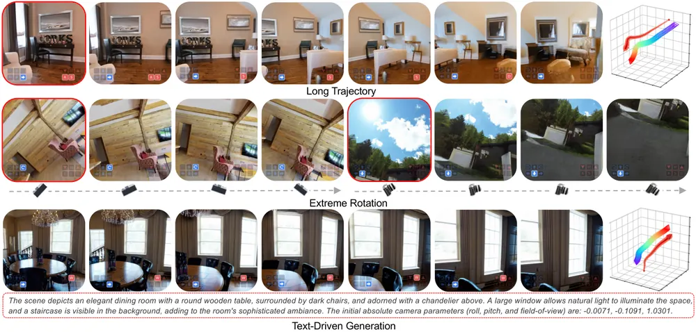
RoboTok: An Internet-Scale Data Engine for Human Demonstration Retrieval and Dexterous Manipulation Learning
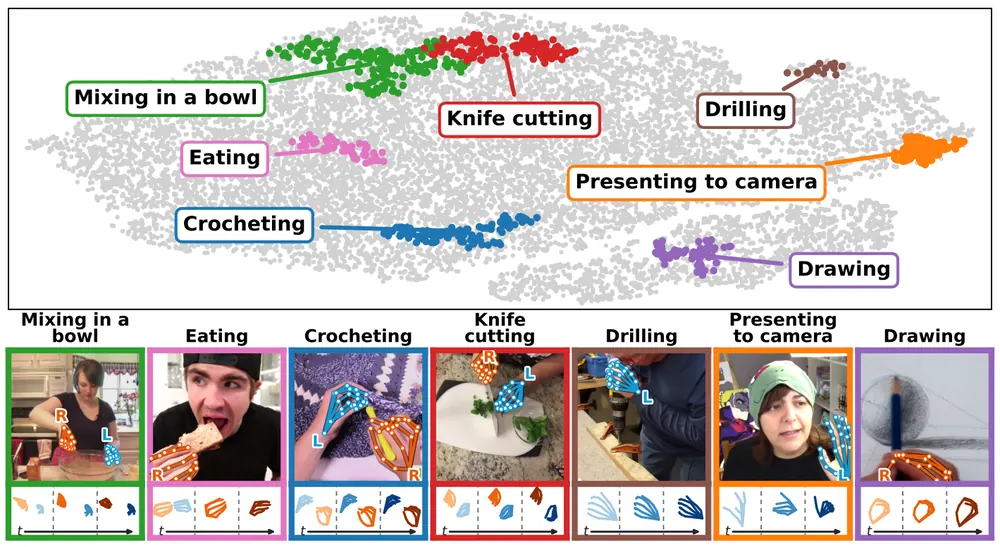
WISE: World-model-guided Imagination Scheduling for Efficient Post-training of Vision-Language-Action Models
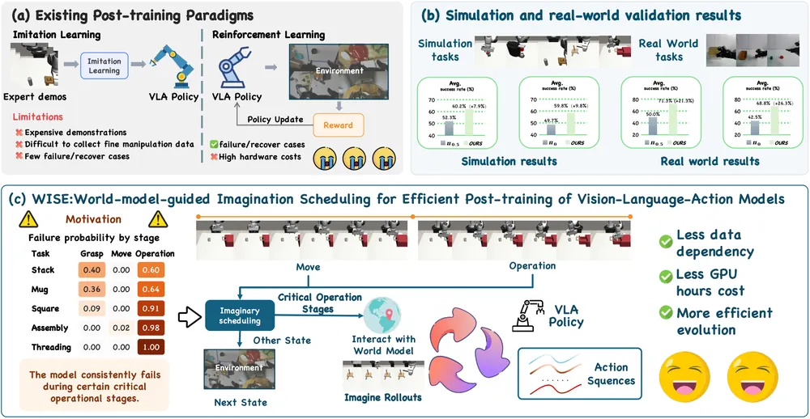
Sensing Which Modality Matters: Evidence-Gated Regularization for Robust VLA Policies
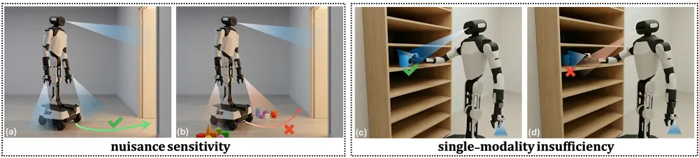
FailBench: How Reliable are VLMs at Judging Robot Task Success?
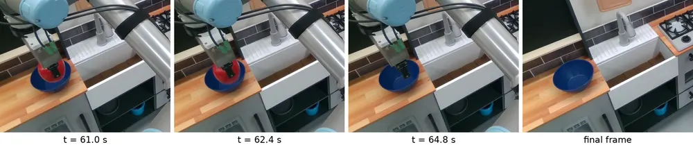
GIFT: Guided Intermediate Feature Training via Action-Oriented Structural Supervision for Robotic Manipulation
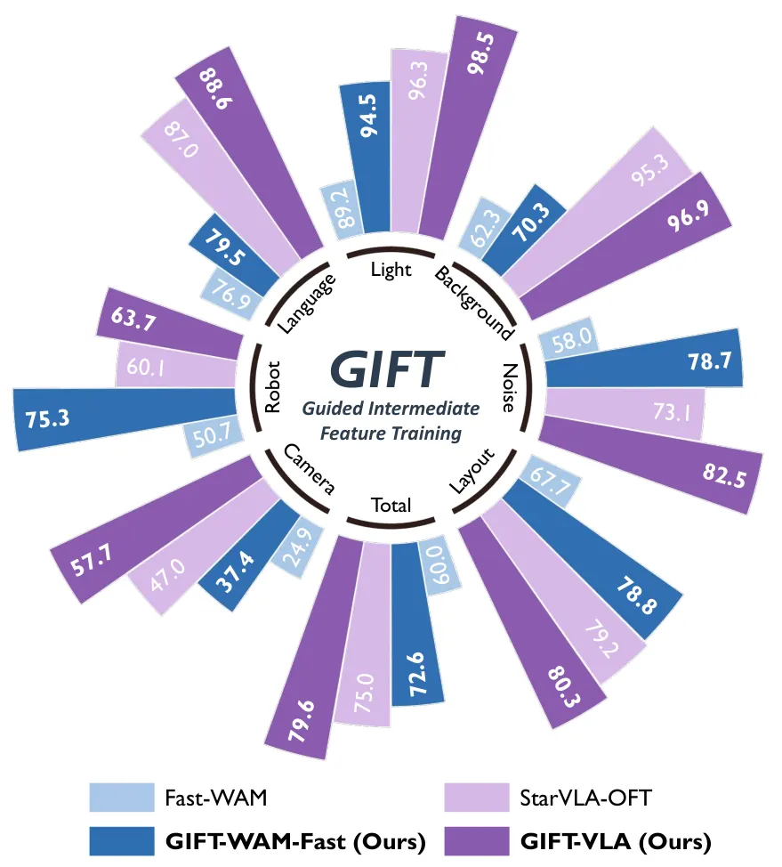
GraFT: A Training-Free Framework for Spatial Reasoning in Multimodal Large Language Models via 3D Scene Graphs
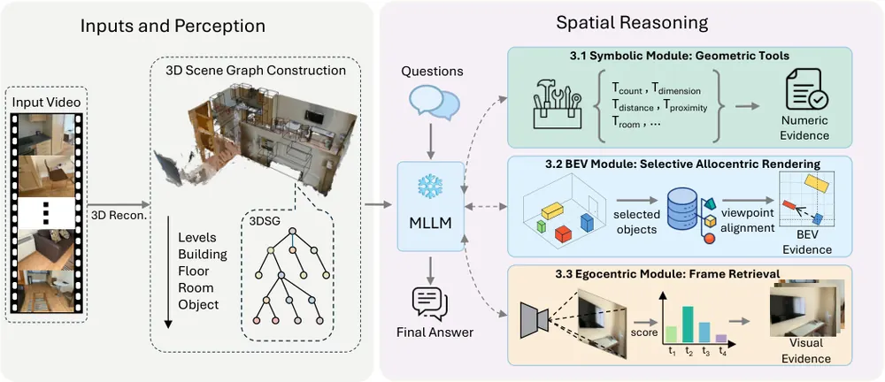
SV-WAM: An Efficient Surround-View World-Action Model for End-to-End Autonomous Driving
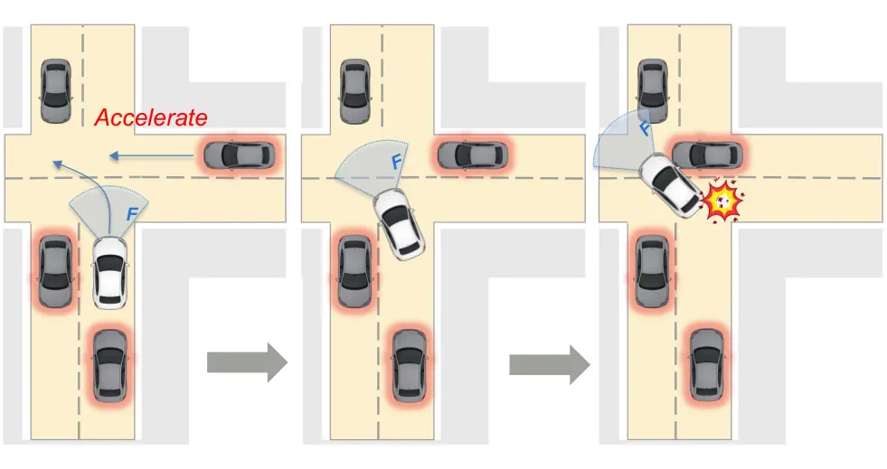
Latent Energy Action Planning with World Models
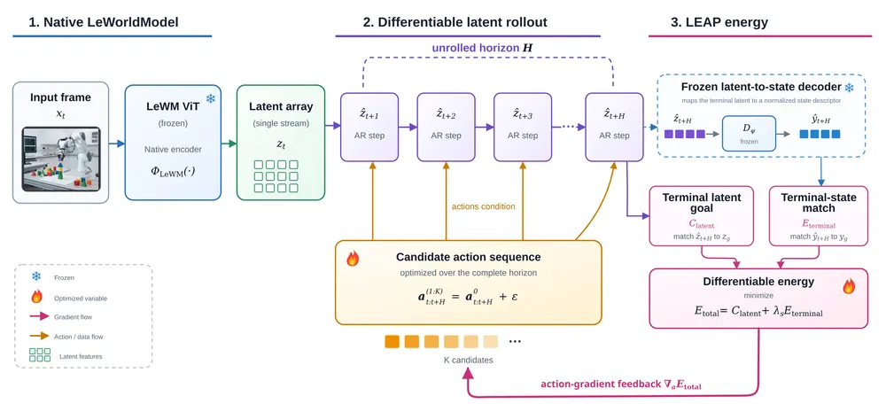
VeriPhy: Agentic Physical Reasoning for World Model Evaluation and Refinement
Continuous Actions from Discrete Minds: Latent-Aligned Planning for End-to-End Autonomous Driving
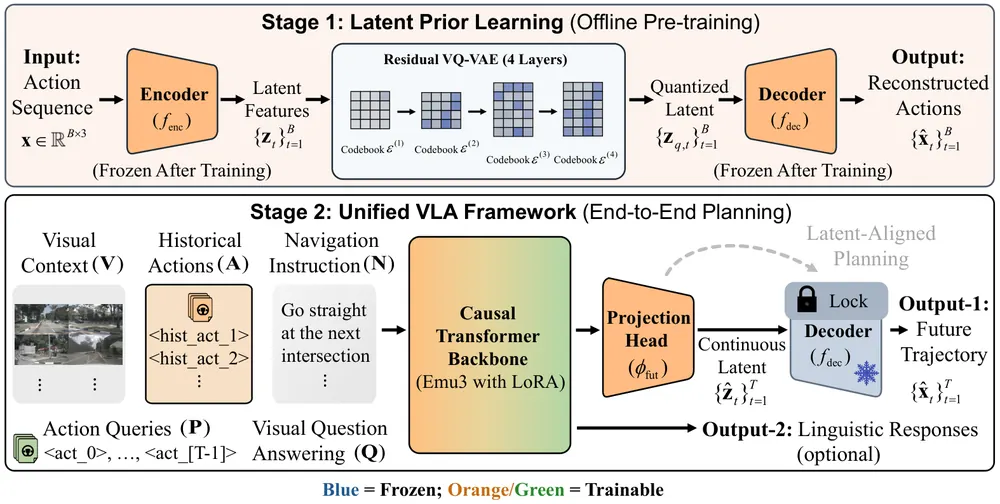
GPU-Accelerated Astrodynamics World Models for Spacecraft Rendezvous and Proximity Operations
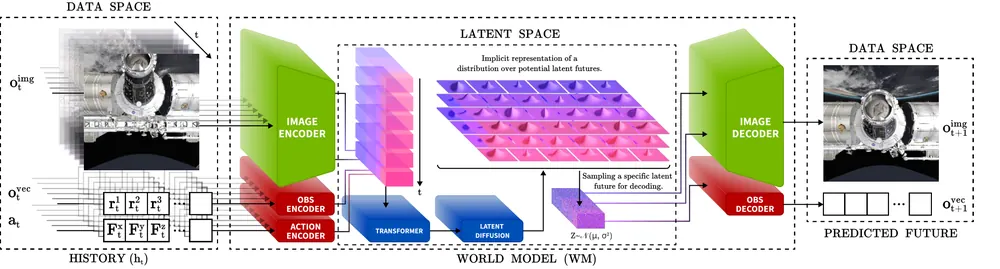
FWBC-VLA: Force-Aware Whole-Body Compensation for Contact-Rich Loco-Manipulation
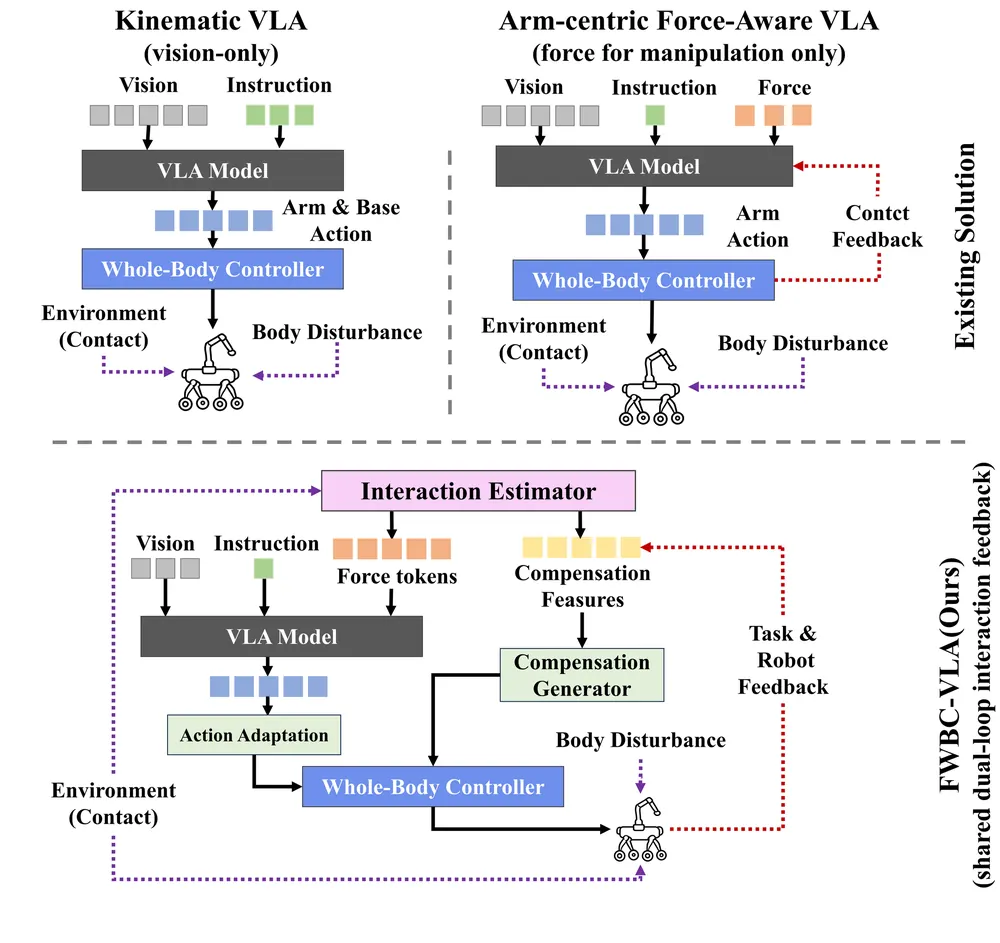
MINERVA: How Small Can a Manipulation Policy Be and Still Solve LIBERO?
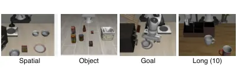
Toward Physically Grounded JEPA World Models for Goal-Conditioned Robotic Planning
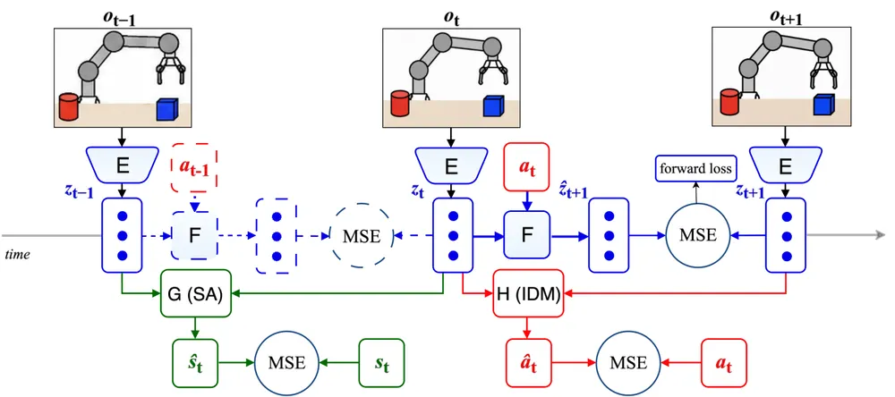
오늘의 핵심 연구 트렌드 종합
- World model이 VLA의 학습·추론 양쪽에 표준 부품으로 들어옴 — WISE는 world model imagination을 post-training reward로, Latent Energy Action Planning은 frozen world model 위 test-time planner로 씀. SV-WAM은 world model을 학습 신호로만 쓰고 추론에선 제거함. world model 하나를 어디에 꽂느냐만 다를 뿐 목적은 전부 policy 개선으로 수렴함.
- Frozen 대형 모델 위에서 test-time에만 최적화하는 패턴이 반복됨 — LEAP는 frozen world model 위 L-BFGS trajectory 최적화, LaPla는 frozen VQ-VAE decoder에 continuous latent를 투영함. 둘 다 backbone은 그대로 두고 inference 단계 목적함수·표현만 바꿔 성능을 올림.
- VLM/world model 평가 자체를 벤치마크 대상으로 삼는 논문이 늘어남 — FailBench는 VLM 실패 판정 신뢰도 상한이 0.77에 그침을, MINERVA는 LIBERO가 사실상 task memorization을 측정한다는 것을 보임. VeriPhy는 생성 비디오 물리적 타당성 검증의 recall 한계를 정량적으로 보임. 방법 제안보다 기존 평가 체계의 허점을 드러내는 방향임.
- 센서·모달리티 신뢰도를 명시적으로 다루는 VLA 연구가 등장함 — Sensing Which Modality Matters는 evidence-gated invariance/sufficiency로 modality entanglement를 억제하고, FWBC-VLA는 F/T 센서 없이 관절 잔차 토크로 접촉력을 추정해 policy에 조건화함. 저비용 센서·데이터로 견고성을 확보하려는 흐름임.
- 3D representation을 검색·추론의 매개체로 쓰는 연구가 이어짐 — RoboTok은 사람이 등장하는 인터넷 동영상을 actor-centric 3D trajectory로 바꿔 유사 시연을 검색하고, GraFT는 3D scene graph에서 도구·BEV·egocentric frame을 파생시켜 frozen MLLM에 공간추론을 부여함. 둘 다 학습 없이 표현 변환만으로 성능을 올림.
- 자율주행·우주로봇 등 로봇학습 방법론의 인접 도메인 전이가 활발함 — SV-WAM, LaPla는 world-action model을 자율주행에, GPU-Accelerated Astrodynamics World Models는 world model을 우주선 도킹에 처음 적용함. manipulation에서 검증된 아이디어가 다른 embodiment로 빠르게 옮겨감.
유망 연구 방향 및 프로젝트 제안
World model 신뢰도 기반 test-time imagination 예산 배분 - research question: world model rollout이 언제부터 신뢰할 수 없는지를 실시간으로 판정해, 신뢰 가능한 horizon에만 연산을 쓰는 test-time planner를 만들 수 있는가 - 접근·novelty: WISE의 bounded rollout + reliability filter와 Latent Energy Action Planning의 decoder 기반 terminal energy, GPU-Accelerated Astrodynamics World Models의 예측 불확실성 기반 이상 탐지를 하나의 판정 모듈로 통합 - 왜 지금·경쟁 prior works: 세 논문 모두 world model 신뢰도를 각자 다른 방식(ranking consistency, terminal state 오차, uncertainty)으로 다루면서도 서로 비교하지 않음. 이를 통일된 test-time controller로 formulation하면 세 baseline과 직접 비교 가능 - risk·target venue: world model 자체를 새로 학습해야 해 비용이 큼. CoRL/ICRA 겨냥, real-robot 검증 필수
힘·접촉 정보를 결합한 multimodal failure detector - research question: 시각만으로 접촉 여부를 판단하기 어려운 assembly-class task에서, 힘·촉각 신호를 추가하면 실패 판정 정확도가 얼마나 개선되는가 - 접근·novelty: FailBench가 밝힌, 접촉 task를 chance-level로만 판정하는 한계에 FWBC-VLA의 센서리스 접촉력 추정을 결합해 VLM judge의 입력을 확장. FailBench 자체는 시각 전용 벤치마크라 이 조합은 아직 없음 - 왜 지금·경쟁 prior works: FailBench가 vision-only judge의 한계를 정량화해 놓아 개선폭을 바로 측정 가능. tactile perception을 failure detection에 붙인 선행연구는 있으나 FailBench 프로토콜로 평가한 사례는 없음 - risk·target venue: 힘 센서·촉각 데이터가 있는 real-robot task로 한정됨. CoRL/RSS, D&B track도 고려 가능
Object-centric 3D 검색 기반 test-time failure recovery - research question: 실패 직후 유사한 성공 시연을 3D 표현으로 검색해 recovery 궤적을 즉시 생성할 수 있는가 - 접근·novelty: RoboTok의 actor-centric 3D trajectory retrieval을 object-centric 좌표계로 바꾸고, GraFT의 3D scene graph를 검색 인덱스로 결합. RoboTok은 학습 데이터 확보용으로만 검색을 쓰고 test-time recovery에는 쓰지 않음 - 왜 지금·경쟁 prior works: retrieval augmented policy는 있으나 실패 발생 이후 실시간 recovery로 쓴 사례는 아직 드묾. RoboTok의 검색 정확도(mAP@20 0.353)가 이미 실증됨 - risk·target venue: 검색 latency가 실시간 recovery에 맞는지가 관건. CoRL 겨냥, 실로봇 실패 시나리오 데이터셋 구축이 선행되어야 함
Evidence-gated 센서 신뢰도를 counterfactual로 학습 - research question: 사전 정의된 task 구조 없이, 센서를 가상으로 perturb했을 때 예측이 얼마나 바뀌는지로 evidence 신뢰도를 학습할 수 있는가 - 접근·novelty: Sensing Which Modality Matters의 evidence-gated invariance/sufficiency가 현재는 사전 정의된 라벨에 의존하는 한계를, VeriPhy의 typed evidence record(measured/abstained/errored) 구조로 보완하고, 여기에 world model 기반 counterfactual perturbation을 새로 추가해 대체 - 왜 지금·경쟁 prior works: 두 논문 모두 evidence 개념을 다루지만 각각 라벨 의존과 미실행 closed-loop라는 한계를 스스로 명시함. 둘을 잇는 후속 연구가 명시적 gap으로 열려 있음 - risk·target venue: counterfactual perturbation을 실로봇에서 안전하게 수행하는 절차가 필요. CoRL/RSS
과거-압축·미래-정밀 비대칭 표현을 manipulation에 이식 - research question: 자율주행에서 검증된 "과거는 discrete로 압축, 미래는 continuous로 정밀 생성"하는 비대칭 표현이 manipulation VLA의 action tokenizer에도 유효한가 - 접근·novelty: LaPla의 frozen residual VQ-VAE decoder + continuous latent projection 구조를 FAST 등 기존 manipulation action tokenizer와 비교 실험 - 왜 지금·경쟁 prior works: LaPla는 자율주행 궤적에서만 검증됨. manipulation은 접촉·힘 등 자율주행에 없는 불연속성이 있어 같은 설계가 통할지가 열린 질문 - risk·target venue: 자율주행과 manipulation의 action space 성격이 달라 이식이 실패할 위험이 있음. ICRA/CoRL, quantization error 완화 폭을 baseline과 비교해 검증 필요
오늘 반드시 읽어야 할 논문
- RoboTok — 사람이 등장하는 인터넷 동영상을 actor-centric 3D 검색 인덱스로 바꿔 STRAP 대비 mAP@20을 0.007→0.353으로 압도적으로 올린 데이터 확보 파이프라인임
- Puffin-World — 중력·기하·외형을 하나의 world state로 통합해 long-horizon 3D world 생성에서 방향 drift를 없앤 native world model임
- WISE — world model imagination을 언제 쓸지 스케줄링해 GPU 연산 77% 절감하면서 real robot 성능까지 올린 VLA post-training 프레임워크임
- Sensing Which Modality Matters — modality entanglement를 evidence-gated invariance/sufficiency로 정식화하고 두 embodiment 실로봇 실험까지 검증한 VLA robustness 연구임
- FailBench — VLM 기반 실패 판정기 13종을 교차 평가해 최고 모델도 balanced accuracy 0.77에 그친다는 상한을 정량적으로 제시함
- GIFT — geometry·affordance·goal 구조적 감독을 학습 시점 제약으로만 부여해 VLA와 world-action model 양쪽에서 성능을 올린 no-injection 설계임
- GraFT — 3D scene graph 하나에서 도구·BEV·egocentric frame을 파생시켜 학습 없이 frozen MLLM의 공간추론을 VSI-Bench 1위로 올린 프레임워크임
- VeriPhy — 생성 비디오의 물리적 타당성을 typed evidence로 검증하되, closed-loop refinement는 미실행으로 남겨 후속 연구 gap을 명확히 제시함
전체 1차 스크리닝 결과 (367편, 점수순) 펼치기
| # | 제목 | 점수 | 🤖 | 분야 | 한 줄 근거 |
|---|---|---|---|---|---|
| 1 | WISE: World-model-guided Imagination Scheduling for Efficient Post-training of Vision-Language-Action Models | 78 | 9 | VLA | world model 상상을 언제 어디서 쓸지 스케줄링해 VLA post-training 연산을 80% 절감하고 real-world robustness도 개선함 |
| 2 | GIFT: Guided Intermediate Feature Training via Action-Oriented Structural Supervision for Robotic Manipulation | 74 | 9 | VLA | geometry·affordance·goal 구조를 중간 feature 학습 제약으로 명시해 action-sufficiency gap을 정의하고 VLA와 WAM 모두에서 LIBERO-Plus·RoboCasa 성능을 크게 높임 |
| 3 | RoboTok: An Internet-Scale Data Engine for Human Demonstration Retrieval and Dexterous Manipulation Learning | 72 | 9 | Manipulation | 웹 동영상에서 hand-trajectory 기반 latent motion space로 dexterous manipulation demonstration을 retrieval하는 데이터 엔진임. VLA·manipulation 학습 데이터 확보의 새로운 formulation으로 우선순위가 매우 높음. |
| 4 | Toward Physically Grounded JEPA World Models for Goal-Conditioned Robotic Planning | 72 | 9 | World Model | IDM와 state alignment를 결합한 JEPA world model로 로봇 planning 성공률을 높였으나 4개 소규모 벤치마크에 그침 |
| 5 | Latent Energy Action Planning with World Models | 72 | 8 | World Model | frozen world model 위에서 action horizon 전체를 미분 가능하게 최적화하는 latent energy planning으로 CEM 대비 성공률을 77.5%에서 94.8%로 크게 높인 test-time planning 기여 |
| 6 | Puffin-World: Scaling a Unified Multimodal Model with Native 3D World States | 72 | 7 | World Model | 물리·기하·외형을 native world state로 통합 모델링하고 카메라 조건부로 생성과 재구성을 동시에 수행하는 unified world model임. world model 우선 주제의 핵심에 해당하며 formulation과 스케일 모두 새로움. |
| 7 | Sensing Which Modality Matters: Evidence-Gated Regularization for Robust VLA Policies | 68 | 10 | VLA | modality entanglement라는 새로운 실패 모드를 정의하고 evidence 기반 정규화로 해결, 양팔·촉각 로봇 실기 실험에서 최대 183% 성공률 개선을 보인 강한 VLA 논문 |
| 8 | MINERVA: How Small Can a Manipulation Policy Be and Still Solve LIBERO? | 68 | 8 | Manipulation | 0.54M 파라미터로 LIBERO를 95% 이상 푸는 capacity floor를 밝히고 instruction conditioning이 사실상 task 암기임을 보인 분석이 흥미로움 |
| 9 | FWBC-VLA: Force-Aware Whole-Body Compensation for Contact-Rich Loco-Manipulation | 66 | 8 | VLA | 센서 없는 잔차 토크 추정을 VLA 토큰으로 주입해 접촉이 많은 loco-manipulation을 안정화한 실로봇 검증이 있음 |
| 10 | SV-WAM: An Efficient Surround-View World-Action Model for End-to-End Autonomous Driving | 65 | 7 | World Model | surround-view world-action model로 action-video를 함께 학습하되 배포 시 video branch를 제거해 효율적 planning을 수행함. world model과 action을 통합하는 causal mask 설계가 새롭고 우선 주제와 직접 연결됨. |
| 11 | GraFT: A Training-Free Framework for Spatial Reasoning in Multimodal Large Language Models via 3D Scene Graphs | 65 | 7 | Embodied AI | 3D scene graph로부터 기하 도구·BEV·egocentric grounding을 제공하는 training-free 공간추론 프레임워크임. scene graph와 embodied spatial reasoning 우선 주제 모두와 직접 연결되고 성능 향상 폭도 큼. |
| 12 | VeriPhy: Agentic Physical Reasoning for World Model Evaluation and Refinement | 65 | 6 | World Model | 비디오 생성물의 물리적 타당성을 typed obligation과 근거 기록으로 검증하는 agentic 평가 시스템임. world model 검증이라는 우선 주제와 직접 연결되고 새로운 evaluation paradigm을 제시함. |
| 13 | FailBench: How Reliable are VLMs at Judging Robot Task Success? | 64 | 8 | Manipulation | 로봇 실패 탐지에 특화된 대규모 벤치마크로 VLM 기반 판정기의 한계를 정량화했으나 새 방법 제안은 없음 |
| 14 | GPU-Accelerated Astrodynamics World Models for Spacecraft Rendezvous and Proximity Operations | 62 | 8 | World Model | 위성 랑데부·근접운항에 world model을 최초로 적용, flow matching 기반 잠재상태 예측으로 RL 대비 도킹 성공률 53% vs 29%, OOD 일반화도 우수 |
| 15 | Continuous Actions from Discrete Minds: Latent-Aligned Planning for End-to-End Autonomous Driving | 62 | 7 | VLA | VQ-VAE 기반 action tokenizer의 continuous latent를 재사용해 discrete VLM reasoning과 continuous 주행 action을 직접 연결하는 VLA 프레임워크임. 행동 표현 우선 주제와 직결되고 latent-aligned planning이 새로운 formulation임. |
| 16 | Drive-HWM: Hierarchical World Models for Dynamic-Latent Guided Autonomous Driving | 62 | 6 | World Model | 자율주행을 위한 slow-fast hierarchical world model로 예측과 행동 생성을 서로 다른 시간 스케일에서 결합함. world model과 action generation을 연결하는 우선 주제와 직접 맞닿아 있고 architecture formulation이 새로움. |
| 17 | Do Video Generators Track the World Across Segments? A Benchmark and Method for World-State Reasoning in Video Continuation | 62 | 6 | World Model | 비디오 연속 생성에서 world-state를 명시적 엔티티 표현으로 추적·갱신하는 벤치마크와 방법임. world model의 상태 일관성 유지라는 우선 주제와 직접 연결됨. |
| 18 | WorldReward: Reward Modeling for Camera-Conditioned World Models | 62 | 6 | World Model | camera-conditioned world model을 위한 VLM 기반 action-consistency·visual-quality 통합 reward model임. world model 평가와 RL post-training에 직접 연결되는 새로운 기여임. |
| 19 | Scaling Bimanual Household Manipulation from 1,500 hours of Demonstrations to On-Policy Corrections | 60 | 8 | VLA | 1500시간 규모 bimanual 데모와 DAgger correction으로 VLA 스케일링 트렌드를 검증했으나 새로운 방법론 기여는 제한적임 |
| 20 | Revisiting Topological Graphs for Macro Action based Closed-loop Reinforcement Learning of Vision Language Navigation in Continuous Environment | 60 | 7 | Navigation | 토폴로지 그래프로 VLN-CE를 계층적 MDP로 재구성해 closed-loop RL을 가능하게 했고 R2R-CE에서 SOTA를 달성함 |
| 21 | Adaptive Vision-Language Grasping via Composable Foundation Priors and Generalizable Grasp Synthesis | 60 | 7 | Manipulation | grasp synthesis와 foundation model 이해를 분리해 재학습 없이 grasp를 일반화하는 구조를 제안했으나 각 모듈은 기존 기법 조합임 |
| 22 | Rethinking 3D Noise: Learning 3D-Aware Video Priors via Optimization-Free Morphological Perturbations | 58 | 7 | 3D Vision | 3DGS를 픽셀처럼 다뤄 scale·rotation·pruning 섭동을 가하는 optimization-free 정규화로 sparse-view artifact를 줄임. 다운스트림 로봇 조작 정책 성공률까지 검증해 3D representation과 manipulation을 직접 연결함. |
| 23 | Long-Horizon Consistent and Interaction-Aware World Models for Multi-Style End-to-End Driving | 58 | 7 | World Model | 시간적 일관성 정규화와 상호작용 상태 분리, GRPO 기반 다중 스타일 최적화를 결합한 world model 주행 정책으로 Bench2Drive에서 +17.08점 개선, 실차 sim-to-real 시연 |
| 24 | Unfold The World: Factorize 4D Properties in Reinforcing Spatial Reasoning | 58 | 6 | Embodied AI | VLM의 4D 공간추론을 평면대응·깊이일관성·시간가역성으로 분해해 강화학습으로 최적화함. embodied spatial reasoning 우선 주제와 직접 연결되고 문제 분해 방식이 새로움. |
| 25 | OctWorld: Long-Range World-Consistent Video Generation with Octree-Based 3D Mapping | 58 | 5 | World Model | octree 기반 persistent 3D memory로 재방문 영역까지 공간 일관성을 유지하는 long-range 비디오 생성 프레임워크임. world model의 장기 공간 일관성이라는 우선 주제와 직접 연결되고 표현 방식이 새로움. |
| 26 | Principia: Relational Physics Tests for Video Models | 58 | 5 | World Model | 물체 간 상대적 물리 법칙 일관성으로 비디오 생성모델의 뉴턴역학 이해를 평가하는 calibration-independent 벤치마크임. world model의 물리적 타당성 검증이라는 우선 주제와 직접 연결되고 기존 벤치마크(VBench)와의 괴리를 강하게 드러냄. |
| 27 | MulDP: Multimodal Diffusion Policy for Autonomous Quadruped Parkour Navigation across Complex Terrains | 56 | 7 | Navigation | 멀티모달 diffusion policy로 쿼드루페드 parkour 내비게이션을 학습했고 실로봇 실험도 포함하나 방법 자체는 diffusion policy의 응용에 가까움 |
| 28 | Rethinking World Models for Safety-Critical Embodied Systems | 55 | 9 | World Model | world model이 우도·시각적 충실도만으로는 안전한 의사결정을 보장하지 못한다는 구조적 문제를 지적하고 counterfactual reasoning과 episodic safety memory를 통합한 Risk-Informed World Model을 제안해 누리랩 우선주제와 정확히 겹치나 perspective 논문이라 실증은 없음 |
| 29 | Air-Ground Collaborative Vision-and-Language Navigation via Shared Bird's-Eye Maps | 55 | 8 | Navigation | UAV의 전역 시야와 UGV의 지역 시야를 공유 bird's-eye map으로 결합한 최초의 training-free air-ground 협업 VLN 베이스라인, CARLA-Air에서 개별 에이전트 대비 성공률 27%p 향상 |
| 30 | BRIDGE: An Open-Source Humanoid Platform via Morphology-Control Co-Design for Physical AI | 55 | 8 | Embodied AI | 인간 동작 재현도를 정량화하는 새 지표로 모습-제어를 공동 설계한 오픈소스 88cm 휴머노이드 플랫폼, 기존 로봇 대비 SOTA 동작 충실도 |
| 31 | Subspace Inference Enables Efficient Active Reward Learning from Preferences | 55 | 6 | RL | extended Kalman filter로 저차원 부분공간에서 보상모델 불확실성을 순차 추적해 능동적 선호학습을 확장 가능하게 한 기법, D4RL·V-D4RL에서 검증된 로봇 강화학습 인접 연구 |
| 32 | Toward Unified Robot Learning: Bridging Representation, Vision-Language-Action, and World Models | 52 | 8 | Embodied AI | representation·VLA·world model을 통합하는 로봇 학습 서베이로 방향 제시는 유용하나 새로운 실험적 기여는 없음 |
| 33 | R2S-Eval: Robot Evaluation with Real-to-Sim Calibration via Vision-Language Models | 52 | 7 | VLA | real-to-sim 보정과 VLM 선호 평가를 결합해 반복 실기 실험 없이 로봇 정책을 통계적으로 안정되게 평가하는 새로운 평가 파이프라인 |
| 34 | Seeing Less Is Not Seeing Safely: Privacy Leakage from Task-Scoped Robot Perception Exports | 52 | 6 | Embodied AI | 가정용 로봇의 task-scoped perception export가 raw 센서를 남기지 않아도 의미·기하 정보로 프라이버시를 노출함을 AI2-THOR로 실증한 새로운 문제설정 |
| 35 | Efficient Semantic Understanding from Digital Foveation | 52 | 5 | Embodied AI | 생물학적 중심와 지각에서 착안한 saliency 기반 active vision으로 dense segmentation 대비 계산량을 크게 줄이면서 의미 이해를 유지함. active perception 우선 주제와 개념적으로 직접 연결됨. |
| 36 | Multi-step Proximal Policy Improvement in Offline Reinforcement Learning | 52 | 5 | RL | 정책을 확률 매니폴드 위의 gradient flow로 보고 다단계 proximal step으로 개선하는 offline RL 기법, D4RL에서 TD3+BC 등 baseline 대비 향상 |
| 37 | TIGPO: Temporal Instance-Graph Policy Optimization for Long-Horizon LLM Agents | 52 | 4 | RL | 정책 업데이트를 넘나드는 지속적 transition graph로 credit assignment를 확장한 long-horizon agent RL, ALFWorld 등 embodied-style 벤치마크에서 검증 |
| 38 | Causal Foundation Models | 52 | 3 | LG | in-context causal effect 추정을 위한 foundation model 패러다임 소개로 causal reasoning 연구에 참고할 만하나 아직 개론 수준 |
| 39 | Real-Time Shape Control of Multi-Segment Soft Robotic Arms Using Koopman Operators with Global and Local Observables | 50 | 7 | Manipulation | 전역·국소 observable을 결합한 Koopman MPC로 10분절 소프트암의 실시간 형상제어를 실기로 검증한 로봇 제어 연구 |
| 40 | Building Pretraining Data for World Models: An Unreal Engine-Based Pipeline for Action-Conditioned Video Generation | 50 | 6 | World Model | Unreal Engine 기반 action-conditioned video 대규모 synthetic 데이터 생산 파이프라인임. world model 학습 데이터 확보라는 우선 주제와 직접 연결되나 기여 자체는 엔지니어링 인프라 구축에 가까움. |
| 41 | Following a Unique Path: A Fast Certifier Applied to Outlier-Robust Pose Registration | 50 | 6 | 3D Vision | SDP 완화의 degeneracy를 central path를 따라 우회해 인증하는 certifier로 pose registration을 기존 대비 최대 1000배 빠르게 인증, 실데이터 파이프라인 검증 |
| 42 | Sparse auto-regressive modeling for scene generation from multi-view images | 50 | 4 | 3D Vision | sparse voxel-aligned 3D latent generative model로 3DGS supervision만으로 미관측 영역을 completion함. object-centric 3D representation 우선 주제와 연관됨. |
| 43 | TRACE: Spatiotemporal Contact Memory Graph Network Simulator for Granular Dynamics | 50 | 4 | World Model | contact edge에 상호작용 이력을 저장하는 graph simulator로 granular manipulation에 쓰일 수 있는 물리 시뮬레이터이나 로봇 태스크 검증은 없음 |
| 44 | Tail-Likelihood Reinforcement Learning | 50 | 3 | RL | reward tail coverage를 직접 최적화하는 새로운 RL objective로 maze navigation 등에 적용했으나 로봇 실증은 없음 |
| 45 | Kernel Reboot: Breaking the Boundaries of Neural Tangent Kernels for Neural Fields | 50 | 2 | 3D Vision | NTK 기반 neural field를 meta-learning과 결합해 sparse-view 복원을 개선, 3D representation 연구에 참고 가능하나 로봇 검증 없음 |
| 46 | Modern Transformers Are Implicit Hybrids: From Functional Differentiation to Principled Hybrid Architecture Design | 50 | 1 | LG | RoPE head 기능 분석으로 하이브리드 attention 설계 원칙을 제시하나 로봇 문제와 무관한 LLM 아키텍처 연구 |
| 47 | TRaIL-Odom: Tightly Coupled Continuous Time Radar-IMU-LiDAR Odometry with Adaptive Doppler Weighting | 48 | 6 | Navigation | LiDAR 기하학적 degeneracy 방향에 맞춰 레이더 도플러 가중치를 적응적으로 조정하는 tightly-coupled odometry, degenerate 구간에서 ATE·RTE 86%/78.5% 개선 |
| 48 | Scal3R: Learning Efficient Multi-Relative Pose Query for Scalable Online 3D Reconstruction | 48 | 5 | 3D Vision | 고정 앵커 대신 multi-reference relative pose query로 온라인 3D 재구성의 장기 드리프트를 억제함. 로봇 내비게이션·매핑에 유용한 online SLAM 성능 개선 기여임. |
| 49 | Temporal Self-Distillation: Learning Visual State Tracking in Videos Without Supervision | 48 | 3 | Video | self-distillation으로 라벨 없이 video state tracking을 학습하는 아이디어는 흥미로우나 로봇 인식 파이프라인과 직접 연결은 약함 |
| 50 | Time Without Timesteps: Simulating Coupled Dynamical Systems via Self-Consistency | 48 | 3 | LG | 시간축 순차 롤아웃 대신 궤적 전체의 self-consistency 고정점으로 결합 동역학계를 시뮬레이션하는 새로운 정식화, world model의 시뮬레이션 백엔드에 참고 가능 |
| 51 | Guide, Not Bind: Why Defeasible Priors Fail in Augmented Lagrangian Causal Discovery | 48 | 2 | LG | causal discovery에서 전문가 prior를 forbidden-edge로 넣는 augmented Lagrangian 완화 기법이 실패하는 이유를 이론적으로 규명 |
| 52 | FlowBalance: Verifier-Grounded Self-Improvement from On-Policy Reasoning Experience | 48 | 1 | RL | verifier 신호로 자기 안내 점수를 보정하는 self-improvement RL 기법으로 수학 추론에서 안정성을 개선했으나 로봇 응용 없음 |
| 53 | Unlocking Lossless Speedups in LLMs via Discrete Diffusion | 48 | 0 | LG | AR 가중치와 경량 diffusion 가중치를 분리해 무손실 병렬 디코딩을 구현한 LLM 추론 가속 기법, 강력한 실증이나 로봇과 무관 |
| 54 | On the Interaction Between Model Compression and Test-Time Adaptation | 47 | 3 | LG | 모델 압축이 test-time adaptation 성능을 저해하는 현상을 체계적으로 분석, test-time optimization 연구에 참고 가능하나 분류 도메인에 국한 |
| 55 | Out-of-Distribution Generalisation with Sequence Models in Offline Multi-Agent Reinforcement Learning | 47 | 3 | RL | offline multi-agent RL의 zero-shot 일반화가 데이터셋 크기보다 태스크 다양성에 좌우됨을 보인 대규모 실증 연구 |
| 56 | The Geometry of Ignorance: LLMs Know When to Temper Bayesian Priors | 47 | 1 | NLP | unembedding 기하학으로 LLM의 prior 의존도를 해석하는 mechanistic 분석이나 로봇 연구와 관련성 낮음 |
| 57 | Beyond Straightness: Non-Crossing Flow Matching via Quantile AlignTree Coupling | 47 | 1 | LG | quantile-aligned tree coupling으로 flow matching의 경로 교차를 줄이는 효율적 구조화 커플링 기법 |
| 58 | Coupled Scaling: A Representational Accessibility Framework for Neural Scaling Laws | 46 | 1 | LG | 아키텍처가 도달 가능한 표현 기하와 태스크 구조의 관계로 scaling law를 설명하는 이론적 프레임워크 |
| 59 | A Low-Cost, Open Platform for End-to-End Autonomous Driving on a Miniature Ackermann Vehicle | 45 | 6 | Embodied AI | 소형 애커먼 차량으로 sim-to-real end-to-end 자율주행을 검증하는 오픈 플랫폼, command-conditioned behavior cloning 베이스라인 위주로 방법론적 새로움은 제한적 |
| 60 | TokenMatch: 3D Mesh Correspondence Transformer with Curvature-Guided Tokenisation | 45 | 2 | 3D Vision | 곡률 기반 토큰화로 partial shape matching 성능을 개선했으나 로봇 응용과는 거리가 있고 기존 correspondence 프레임워크의 확장에 가까움 |
| 61 | Resolution-Aware Experimental Design under Partial Identifiability | 45 | 2 | LG | partial identifiability 하에서 구조적 후보집합 크기를 기준으로 실험을 선택하는 정식화, active perception과 개념적으로 유사하나 지구과학 벤치마크 |
| 62 | Prospective Coding Improves Learning in Deep Continuous-Time Recurrent Networks | 45 | 2 | LG | bottom-up 입력을 prospective하게 만드는 파라미터 없는 보정으로 깊은 연속시간 RNN의 gradient attenuation을 완화, 로봇 제어용 continuous-time 모델에 참고 가능 |
| 63 | ObserverBench: Testing Mechanistic Estimates for Intervention and Control | 45 | 1 | LG | 해석가능성 추정치가 실제 개입 성능으로 이어지는지 검증하는 벤치마크, mechanistic interpretability 분야 기여이나 로봇과 무관 |
| 64 | Beyond Endpoint Scores: Time- and Capacity-Conditioned Evaluation of Continual Knowledge Updating | 45 | 1 | LG | continual knowledge editing 방법 비교가 평가 시점과 replay 용량에 따라 뒤집힘을 보인 평가 방법론 비판 논문, lifelong learning 평가에 참고 가능 |
| 65 | High-Dimensional Learning Dynamics of Attention-Indexed Models | 45 | 0 | LG | attention 파라미터화의 학습 동역학을 고차원 극한에서 분석해 tied/untied attention의 회복 샘플복잡도를 규명한 이론 논문 |
| 66 | Inferred Generative-Process Diversity Predicts Correlated Failure Across Language Models | 44 | 1 | LG | 압축거리 기반으로 LLM 집단의 생성과정 다양성이 상관된 실패를 예측함을 보인 분석, 멀티에이전트 안전성에 참고 가능 |
| 67 | A computable representation of the physical laboratory enables verifiable workflows | 42 | 6 | Embodied AI | 물리 실험실을 타입 지정 연구객체·역량기반 연산·조합 워크플로 대수로 계산 가능하게 표현해 로봇 실험실에서 실행 전 사전조건을 검증하는 프레임워크로 TAMP적 formulation에 가까움 |
| 68 | VI3: Grounding Pretrained 3D Foundation Models with Inertial Cues | 42 | 5 | 3D Vision | IMU 관성 신호로 3D foundation model의 metric scale을 복원하는 model-agnostic 프레임워크임. 로봇 상태추정·내비게이션에 유용한 센서 융합 기여이나 항공 도메인 중심으로 검증됨. |
| 69 | Language-encoded network topology enables large language models to reason about complex networks | 42 | 1 | NLP | 네트워크 구조를 언어화해 LLM의 구조 추론을 돕는 새로운 표현법이나 로봇 scene graph와는 다른 도메인 |
| 70 | RecurTrace: Adaptive Latent Reasoning with Loop-Time Memory | 42 | 1 | LG | 루프 시간축에 대한 attention과 halting head로 latent recurrence 추론 깊이를 적응적으로 조절하는 기법 |
| 71 | Verify Before You Distill: Prompt-Level Teacher Gating for On-Policy Distillation | 42 | 0 | NLP | teacher 신뢰도를 prompt 단위로 검증해 on-policy distillation을 게이팅하는 LLM post-training 기법 |
| 72 | Gradients Know What Outcomes Don't: Unlocking Reinforcement Learning for LLM Reasoning with Gradient-Aligned Rewards | 42 | 0 | RL | 정책의 gradient 공간에서 expert anchor와의 코사인 유사도로 dense reward를 만드는 RLVR 기법 |
| 73 | It's the Problem, Not the Path: Budget and Difficulty Confounds in LLM Reasoning Trajectories | 42 | 0 | NLP | LLM 추론 궤적의 breakthrough 해석에 restart-controlled·난이도 통제 실험으로 반박한 방법론적 비판 논문 |
| 74 | Free Pause Tokens | 42 | 0 | LG | 병렬 예측 스트림으로 추가 문맥 길이 없이 사고 토큰 효과를 내는 효율적 추론 기법 |
| 75 | VestigeKV: The NoPE-MLA KV Cache Carries Its Own Eviction Signal in a Vestigial Branch | 42 | 0 | NLP | NoPE-MLA의 decoupled 분기를 재활용해 query 없이 KV cache를 압축하는 기법, 특정 아키텍처 한정 발견 |
| 76 | ARTiS: An Adaptive Robotic Gripper for Enhanced Tool Manipulation in Disassembly Applications | 40 | 6 | Manipulation | 소프트 팜과 7자유도 손가락을 결합해 해체작업용 공구를 안정적으로 파지하는 적응형 그리퍼 하드웨어 설계 |
| 77 | Zero-Shot Novel Depth Synthesis Using 3D Foundation Models Scene Representations | 40 | 4 | 3D Vision | 3D foundation model 내부 표현에서 latent diffusion으로 미관측 시점의 depth를 합성하는 방법임. novel view 지각 개선으로 active perception에 활용 가능함. |
| 78 | Local Updates, Global Learning (LUGL): Playing Games with non-incremental Learners | 40 | 2 | RL | 데이터 수집과 모델 학습을 분리해 gradient-boosted tree를 self-play RL에 쓸 수 있게 한 프레임워크, 보드게임 도메인 한정 |
| 79 | Robust PAC Learning of Concurrent Stochastic Games | 40 | 2 | RL | 전이 불확실성이 있는 concurrent stochastic game에 대한 최초의 PAC 학습 프레임워크, 멀티로봇 게임이론에 이론적으로 연관 |
| 80 | Equation Recast for Canonical Operator Learning Across Parametric PDEs | 40 | 1 | LG | PDE parametric operator learning을 canonical form으로 재구성한 물리 시뮬레이션 논문으로 로봇 적용 가능성 낮음 |
| 81 | No-Regret Bayesian Optimization with Finite-Library Input-Warped Kernels | 40 | 1 | RL | 유한 warp library로 GP-UCB의 후회 보장을 유지하며 커널 기하를 적응시키는 베이지안 최적화 기법, 로봇 응용은 제시 안 됨 |
| 82 | Learnable composition for neural operators | 40 | 1 | LG | 국소 사전학습과 조합 모듈로 neural operator의 도메인 전이를 개선한 물리 시뮬레이션 연구 |
| 83 | Geometry-Aware Graph Construction via Adaptive Spectral Bandwidth Control | 40 | 1 | CV | 커널 스펙트럼 복잡도를 매니폴드 고유차원에 맞추는 그래프 구성법, SSL 임베딩에서 성능 개선 |
| 84 | DE-Venus: A Data-Efficient RLVR Framework for Large Language Models | 40 | 0 | RL | RLVR 파이프라인의 데이터 선별·약지도·정제를 통합한 프레임워크로 라벨 효율을 높였으나 LLM 추론 도메인 한정 |
| 85 | SimpleDesign: A Joint Model for Protein Sequence and Structure Codesign | 40 | 0 | LG | 단일 단계 end-to-end objective로 단백질 서열·구조를 공동 생성하는 모델, 로봇과 무관한 생물학 응용 |
| 86 | WeatherNext 3: Increasing resolution and performance of global weather models with raw observations | 40 | 0 | LG | 관측 데이터를 직접 동화해 해상도와 성능을 높인 대규모 기상예보 파운데이션 모델, 로봇과 무관 |
| 87 | Witnesses Explain Anomalies | 40 | 0 | LG | 구면 방향 투영으로 스코어와 설명을 동시에 제공하는 설명가능 이상탐지 기법, 표형 데이터 벤치마크 |
| 88 | Headroom-Drift Replay: A Primitive for Principled Replay Control in GRPO | 40 | 0 | RL | GRPO의 replay를 headroom과 drift 두 기준으로 선별하는 경량 기법, agentic search에서 비용 절감 |
| 89 | Hardware-Aware FP4 FlashAttention-4 | 40 | 0 | LG | Blackwell FP4 텐서코어에 맞춘 attention 커널 최적화로 순전파 2배 이상 가속, 하드웨어 엔지니어링 기여 |
| 90 | A hybrid pipeline for dynamic ontology-based semantic mapping | 38 | 5 | Embodied AI | 온톨로지 기반 동적 semantic mapping 파이프라인으로 딥러닝적 novelty보다는 시스템 통합에 가까움 |
| 91 | WireSeg-32K: A Physics-Grounded Synthetic Dataset for Wire Instance Segmentation | 38 | 4 | 3D Vision | Cosserat-rod 물리 시뮬레이션 기반 wire instance segmentation synthetic dataset임. deformable linear object 인식은 로봇 조작과 연결되나 인식 벤치마크 성격이 강함. |
| 92 | Beyond Retrieval: Progressive Latent Memory Evolution for Streaming Video Understanding | 38 | 4 | Video | streaming video 이해를 위해 외부 메모리 검색 대신 progressive latent working memory로 내재화하는 프레임워크임. robot memory 우선 주제와 개념적으로 연관되나 일반 비디오 QA 도메인에 한정됨. |
| 93 | PointGT: Simultaneous Geometry and Texture Editing for Point-Based Representations | 38 | 3 | 3D Vision | point-based representation에서 geometry와 texture를 동시 편집하는 방법임. object-centric 3D representation과 연관되나 응용은 그래픽스 편집 중심임. |
| 94 | P-CORE: Self-Supervised Surface Consistency for Point-Based Neural Editing | 38 | 3 | 3D Vision | self-supervised surface consistency로 large deformation에 강인한 point-based 편집 방법임. 3D representation 우선 주제와 연관되나 그래픽스 편집 응용에 국한됨. |
| 95 | The Dually Flat Geometry of Planning as Inference | 38 | 3 | RL | planning-as-inference를 방문측도의 dually flat 정보기하로 재정식화해 선형 보상을 넘어선 일반 함수형으로 확장한 이론 연구로 RL 우선주제에 부합하는 일반화 가능한 프레임워크임 |
| 96 | Spectral characteristics of autoencoder parameters as a vector representation of data | 38 | 1 | LG | 오토인코더 파라미터의 특이값을 데이터 벡터 표현으로 쓸 수 있음을 이론·실험으로 보인 연구 |
| 97 | Federated Causal Discovery via Regression-Directed Cumulants | 38 | 1 | LG | 고차 cumulant를 이용한 federated LiNGAM causal discovery 알고리즘군과 그 한계 분석 |
| 98 | Conditioning Degenerate Diffusion Models | 38 | 1 | LG | causal optimal transport로 특이 diffusion coefficient 하의 조건부 생성을 정식화한 이론 논문 |
| 99 | The Gradient Does Not See Rank: Rank-Indifference in Matrix-CODI on ProsQA | 38 | 0 | LG | latent reasoning matrix의 rank가 정확도와 무관함을 보인 부정적 결과 논문, 로봇과 무관 |
| 100 | Routing Is Not Enough: Diagnosing Intra-Adapter Subspace Contention in MoE+LoRA Fine-Tuning | 38 | 0 | NLP | MoE+LoRA 멀티도메인 파인튜닝의 negative transfer를 진단하고 완화하는 기법 |
| 101 | Differentiable Interval Bottlenecks for Interpretable Anomaly Detection in Numerical Data | 38 | 0 | LG | 구간 멤버십으로 구조화된 latent bottleneck을 갖는 설명가능 이상탐지 오토인코더 |
| 102 | LeanStream: A Speculate-and-Refine Streaming Framework for Efficient on-Device LLM Inference | 36 | 1 | LG | on-device LLM 추론을 위한 speculate-and-refine 스트리밍 시스템으로 경량화 위주의 엔지니어링 기여 |
| 103 | TraveL: Transformer-based Multi-view Path Distributional Representation Learning | 36 | 1 | LG | 도로망 경로의 분포적 표현학습으로 여행 행태를 모델링, 로봇 내비게이션과는 다른 인간 교통 응용 |
| 104 | LeanGRPO: Eliminating Redundant Recomputation in Diffusion RL | 36 | 1 | LG | diffusion RL 롤아웃과 업데이트의 중복 재계산을 제거하는 시스템 최적화, 이미지·비디오 생성 모델 학습 효율화 위주 |
| 105 | Stable and Scalable Bundle Adjustment of Holistic 3D Structures | 35 | 4 | 3D Vision | 점·선을 넘어 평면성·평행성 등 고차 기하 제약을 통합한 bundle adjustment 프레임워크임. 로봇 SLAM·매핑에 유용한 기초 기하 알고리즘 개선이나 응용은 일반 3D vision임. |
| 106 | Laplacian Frequency Hierarchies for Efficient 3D Gaussian Splatting Training | 35 | 3 | 3D Vision | Laplacian frequency 분해로 3DGS 학습 속도를 높이는 coarse-to-fine 기법임. 3DGS 우선 주제와 연관되나 plug-and-play 가속에 그치는 incremental engineering임. |
| 107 | When Do Frozen VLMs Respond to Image-Free Object-Token Edits? An Answer-Key-Free Protocol and What It Reveals | 35 | 3 | Multimodal | object-level token을 편집해 frozen VLM의 what-if 반응을 측정하는 counterfactual probing 프로토콜임. causal/counterfactual reasoning 우선 주제와 개념적으로 연관되나 원격탐사 VQA 도메인에 국한됨. |
| 108 | Mesh-Native Physics-Informed Graph Surrogates for TCAD-in-the-Loop Design Space Exploration | 35 | 0 | LG | 반도체 소자 시뮬레이션용 physics-informed GNN surrogate로 로봇과 무관 |
| 109 | Risk and Anomaly Identification for Distribution Network Optimal Operation Based on Reinforcement Learning and Uncertainty Quantification | 34 | 1 | RL | 배전망 운영을 위한 불확실성 인지 강화학습 프레임워크, 로봇과 무관한 전력망 응용 |
| 110 | From Nowcasting to Forecasting: Adapting a Reanalysis-Trained | 34 | 0 | LG | conditional flow matching으로 관측 기반 구름 예보를 12시간까지 확장한 기상 모델 |
| 111 | RATL: Learning from Retrieved Residuals for Robust Multivariate Time-Series Forecasting | 34 | 0 | LG | 과거 잔차를 retrieval-augmented로 활용하는 다변량 시계열 예측 플러그인 기법 |
| 112 | RobustSeiz: An Open-Source Framework for Benchmarking the Robustness of EEG Seizure Detection Models | 34 | 0 | LG | EEG 발작 탐지기의 분포 변화 강건성을 표준화 평가하는 오픈소스 벤치마크 |
| 113 | Programming and execution of skill-based human-robot-crane collaborative tasks | 33 | 5 | Manipulation | CAD 기반 스킬 프로그래밍과 behavior tree로 사람-로봇-크레인 협동 조립 작업을 실행하는 산업 응용 시스템 |
| 114 | Frontier LLMs are effective batch optimizers: Assessing reasoning models in continuous and discrete settings | 33 | 1 | LG | frontier LLM을 batch optimizer로 평가한 실증 연구, 새로운 방법론이라기보다 분석 논문 |
| 115 | A location-invariant estimator of extremal quantile treatment effects for heavy-tailed distributions | 33 | 1 | LG | heavy-tailed 분포에서 위치 불변 극단 quantile treatment effect 추정량을 제안한 인과추론 이론 논문 |
| 116 | Distilling deep optical flow stereo methods to retrieve dense three-dimensional wind fields | 33 | 0 | CV | 위성 바람장 추정을 위한 stereo optical flow distillation, 원격탐사 응용 |
| 117 | Selective Hypergraph Refinement for Frozen Graph Clustering | 33 | 0 | LG | 학습이 끝난 그래프 클러스터링 결과를 hypergraph로 후처리 개선하는 기법, 개선폭이 작음 |
| 118 | Restricted Eigenvalues Beyond Gaussian Width: Threshold Occupancy under Heavy Tails | 33 | 0 | LG | heavy-tailed 설계에서 restricted eigenvalue 이론의 open problem에 반례를 제시한 순수 통계 이론 논문 |
| 119 | Extracting Forgotten Prompts from Targeted Unlearned Models | 33 | 0 | NLP | unlearning된 모델에서 잊혀진 프롬프트 자체를 복원하는 새로운 공격 기법 |
| 120 | Projected Riemannian Gradient Descent for the Bures-Wasserstein Barycenter: Dimension-Independent Linear Convergence at Unit Step Size | 33 | 0 | LG | Bures-Wasserstein barycenter 계산을 위한 unit-step 리만 경사하강법의 차원독립 수렴 이론, 순수 최적화 이론 |
| 121 | Pushing the (Decision) Boundaries: Dynamically Calibrating Differentially Private Noise to Explainability in Federated Learning | 33 | 0 | LG | federated learning에서 설명가능성 신호로 DP 노이즈를 동적 조정하는 의료영상 응용 연구 |
| 122 | Constant regret in general games via higher-order optimism | 33 | 0 | LG | N인 일반게임에서 상수 후회를 보장하는 uncoupled 학습 알고리즘, 순수 게임이론 |
| 123 | DropClick: Semi-Automated One-Click Segmentation for Agricultural Robotic Data | 32 | 4 | Manipulation | 농업 로봇 데이터용 one-click segmentation 라벨링 도구임. robotics 응용이지만 어노테이션 도구 수준의 incremental 기여임. |
| 124 | RoughSense: Lightweight Terrain-Induced Rover Vibration Prediction Using Point Clouds and IMU Feedback | 32 | 4 | Navigation | 포인트클라우드와 IMU로 지형 진동을 예측하는 경량 traversability 기법으로 새로운 학습 패러다임은 아님 |
| 125 | CauseCollab: Causal Unified and Modality-Agnostic Network for Heterogeneous Collaborative Perception | 32 | 4 | 3D Vision | 이종 센서 모달리티 간 협업 인지를 인과적 표현학습으로 정렬한 V2X 협업인지 연구로 모달리티 격차가 큰 시나리오에서 성능 향상을 보였고 embodied perception과 맞닿음 |
| 126 | Establishing a Dynamic Multimodal HRI Dataset for Engagement Analysis with a Humanoid Robot | 30 | 4 | Embodied AI | 생리신호를 포함한 인간-로봇 상호작용 참여도 분석용 데이터 수집 프로토콜 제안, 아직 방법론 없이 실험설계 단계 |
| 127 | Robot Aware Computational Design of Object Specific Passive Grippers for Additive Manufacturing | 30 | 4 | Manipulation | 객체별 수동 그리퍼를 자동 생성하는 제조 파이프라인으로 학습 기반 방법이 아님 |
| 128 | Lose the Order, Keep the Hierarchy: Deordering HTN Plans | 30 | 4 | RL | HTN 계획에서 불필요한 순서 제약을 제거하는 deordering 기법으로 TAMP의 계층적 계획 후처리에 해당하나 클래식 플래닝 벤치마크에 그침 |
| 129 | STARS-GS: Structure-Aware Regularized Gaussian Splatting for Large-Scale Aerial Surface Reconstruction | 30 | 3 | 3D Vision | 대규모 항공 표면 재구성을 위한 구조 인지 3DGS 정규화임. 3D representation 우선 주제와 연관되나 지도 제작 도메인의 incremental engineering 기여임. |
| 130 | TruncGradGS: Improved 3D Gaussian Splatting via Truncated Gradient Updates | 30 | 3 | 3D Vision | 3DGS의 gradient vanishing 문제를 truncated gradient로 해결하는 최적화 기법임. 3DGS 우선 주제와 연관되나 최적화 개선에 그치는 incremental 기여임. |
| 131 | Observation-Conditioned Latent Energy Priors for Sparse Implicit Neural Shape Completion | 30 | 3 | 3D Vision | sparse 관측에서 implicit shape completion을 개선하는 observation-conditioned energy prior임. object-centric 3D representation과 연관되나 의료 도메인에 국한됨. |
| 132 | QLAUN: A Research-Oriented, Robust, Agile, Modular, and Affordable Torque-Controlled Quadruped Robot | 30 | 3 | Robotics | 3D 프린팅 쿼드루페드 하드웨어 플랫폼 소개로 학습 알고리즘 기여는 없음 |
| 133 | Where Does Harness-Optimization Value Live? Localized Gains and the Budget-Splitting Trap in Self-Evolving LLM Agents | 30 | 3 | RL | ALFWorld에서 harness 슬롯별 최적화 기여도를 분석했지만 텍스트 기반 agent 연구로 실로봇과는 거리가 있음 |
| 134 | Who Speaks for the Pruned? Visual Token Pruning as Coverage Optimization | 30 | 2 | Multimodal | VLM visual token pruning을 coverage 최대화 문제로 재정의한 효율화 기법임. robotics 응용은 간접적임. |
| 135 | Learning to Zoom Efficiently with a Contrastive Curriculum | 30 | 2 | Multimodal | MLLM tool-use(zoom-in) 학습을 위한 contrastive intrinsic reward임. agent 효율화 기여이나 robotics와의 직접 연결은 약함. |
| 136 | MemoryLACE: Memory Lifecycle-Aware Consolidation and Evidence Retrieval | 30 | 2 | NLP | 텍스트 증거의 병합·대체·모순 관계를 명시적으로 모델링하는 장기 메모리 프레임워크로 robot memory에 원리적으로 참고할 만하나 텍스트 대화 도메인에 한정됨 |
| 137 | A Computationally Feasible Framework for Causal Probabilistic Explanation | 30 | 2 | AI | actual causality와 Pearl의 확률적 인과이론을 결합해 계산 가능한 인과적 설명 프레임워크를 제시한 연구로 counterfactual reasoning 일반 이론으로서 가치 있으나 로봇 응용은 없음 |
| 138 | From Zero to Hero: An Open LLM Ecosystem for Armenian | 30 | 0 | NLP | 저자원 아르메니아어 LLM 생태계 구축 논문, 언어자원 기여 위주 |
| 139 | Mind the Gap: Robustness Risks in PII Detection Systems | 30 | 0 | NLP | PII 탐지 시스템의 분포 변화 강건성을 스트레스 테스트한 벤치마크 논문 |
| 140 | An Adversarial Zero-Shot Learning Approach for Anomaly Detection in Multivariate IoT Traffic Data | 30 | 0 | CV | 적대적 학습 기반 zero-shot 도메인 적응 IoT 이상탐지, 로봇과 무관 |
| 141 | A Peer-Relative Representation Learning Framework for Energy Inefficiency Identification in Mobile Network Sites | 30 | 0 | LG | 통신기지국 에너지 비효율을 비지도 peer-relative 임베딩으로 탐지하는 응용 연구 |
| 142 | OSR: Output Space Redistribution for Adaptive Label Removal in Classification Models | 30 | 0 | LG | 출력공간 재분배로 재학습 없이 라벨 제거를 근사하는 분류 모델 유지보수 기법 |
| 143 | CoFiE: Coarse-to-Fine Evidence Selection for Efficient Streaming Video Understanding | 28 | 3 | Video | streaming video 이해를 위한 coarse-to-fine evidence selection 효율화 방법임. 지연시간 감소가 robot 스트리밍 지각과 간접 연관됨. |
| 144 | Understanding Autonomous Driving Datasets by Describing Differences between Image Subsets in Natural Language | 28 | 3 | Embodied AI | 자율주행 데이터셋 subset 간 차이를 자연어로 기술하는 데이터 분석 도구임. robotics 태그가 있으나 핵심 기여는 데이터 introspection에 그침. |
| 145 | Catalogue Photography as a Cold Start: Toward Deployable Carbide Burr Recognition | 28 | 3 | CV | 카탈로그 사진만으로 산업 부품 인식 콜드스타트를 분석한 연구임. robotics 태그가 있으나 핵심은 분류·검색 도메인 전이 분석에 그침. |
| 146 | Local Path Planning and Obstacle Avoidance for an Omnicopter Platform | 28 | 3 | Navigation | 6D DWA 확장을 통한 UAV 지역 경로계획으로 고전적 제어 기법의 engineering 개선에 가까움 |
| 147 | FlashRender: Few-Step Generative Rendering via Camera-Controlled Video MeanFlow | 28 | 2 | 3D Vision | few-step camera-controlled generative rendering 방법임. novel view synthesis 효율화로 robotics와 간접적으로만 연관됨. |
| 148 | RuleMem: Active Rule Memory for Long-Term Conversational Agents | 28 | 2 | NLP | 대화 이력에서 재사용 가능한 규칙을 귀납해 검색·추론을 능동적으로 이끄는 메모리 프레임워크로 robot memory 설계 원리로 일부 참고 가능하나 텍스트 QA 도메인에 국한됨 |
| 149 | Efficient Test-Time Adaptation through Human-AI Interaction | 28 | 2 | AI | 사용자와의 반복 상호작용으로 개인화 기준을 학습하는 test-time adaptation 프레임워크로 우선주제인 test-time optimization과 맥락은 닿지만 글쓰기·시각창작 도메인이라 로봇 응용은 아님 |
| 150 | Evaluating Graph Neural Networks for Change-Criticality Classification in Maritime Navigation Charts | 28 | 1 | CV | 해도 변경의 항행 위험도 분류를 위한 GNN 적용 연구로 벤치마크 성격이 강하고 로봇 내비게이션과는 다른 문제 |
| 151 | The 2026 PNPL Competition: Word Classification and Efficient Cross-Subject Generalisation in LibriBrain100 | 28 | 1 | NLP | 비침습 speech decoding BCI 경진대회 소개 논문으로 새로운 방법론 기여는 제한적 |
| 152 | RL-ADA: A World-Feedback Framework for Adversarially Robust Enterprise Dialogue Agents | 28 | 1 | RL | 고객 상담 에이전트를 world feedback 보상으로 공진화시키는 adversarial RL 프레임워크로 로봇 응용과는 거리가 있음 |
| 153 | Sequential Beats Joint: On the Interplay between On-Policy Distillation and RLVR | 28 | 1 | RL | on-policy distillation 후 RL을 순차 적용하는 것이 결합 최적화보다 우수함을 밝힌 LLM post-training 연구로 VLA post-training 설계에 참고할 원리적 시사점이 있음 |
| 154 | From Euclidean to Graph-Structured Data: A Survey of Collaborative Learning | 28 | 0 | LG | federated·decentralized graph learning survey로 새로운 실험 기여 없음 |
| 155 | Portable Causal Fairness Across Synthetic Data Generator Families | 28 | 0 | LG | synthetic data generator 계열 간 causal fairness 이식성을 검증한 응용 연구 |
| 156 | LongCounsel-8: A Benchmark Suite for Longitudinal Depression Tracking from Multi-Session Counseling Dialogues | 28 | 0 | NLP | 다세션 상담 대화 기반 우울증 추적 벤치마크 데이터셋 구축 논문 |
| 157 | Towards Numerical TOHTN Planning with SMT-based HTN-SAT Encoding | 26 | 3 | RL | 수치 fluent를 다루는 HTN 계획을 SMT 기반으로 확장한 연구로 TAMP 관련 formulation이지만 벤치마크 수준의 초기 결과에 그침 |
| 158 | InSituMeasure: Probing Situated Measurement Grounding in Industrial Scenes with Multimodal Large Language Models | 26 | 3 | Embodied AI | 산업 현장 계기판 판독이라는 situated measurement grounding을 MLLM으로 평가한 벤치마크로 embodied spatial reasoning과 맞닿지만 순수 벤치마크 논문임 |
| 159 | Do GUI Agents Know When Not to Act? Enabling Conflict-Aware Termination for Multimodal GUI Agents | 26 | 2 | Embodied AI | GUI agent가 모순된 지시에서 행동을 멈추는 능력을 다뤄 failure-aware termination과 맥락은 닿지만 화면 조작 도메인이라 로봇 실체화와는 거리 있음 |
| 160 | Common-Witness Certificates and Sharp Feature Bounds for Counterfactual Image Auditing | 26 | 2 | AI | 이미지 편집기의 국소적 타당성이 전역적 일관성을 보장하지 않는 문제를 common witness 이론으로 정식화한 counterfactual auditing 연구로 일반화 가능한 이론이지만 로봇 응용은 없음 |
| 161 | Accountable AI with Grounded, Faithful, Consistent, Actionable Rationales: A Case Study in Clinical Trial Matching with VERDICT | 26 | 1 | NLP | LLM 결정을 SMT 솔버로 변환해 정책 일관성과 신뢰 가능한 rationale을 확보한 neurosymbolic 접근으로 임상 도메인에 국한됨 |
| 162 | Predictive Zonotope Reduction: Precise Runtime Monitoring under Uncertainty | 25 | 4 | RL | 불확실성 인지 zonotope 축소를 MPC로 최적화한 런타임 안전 모니터링 기법으로 로봇 학습과는 거리가 있음 |
| 163 | When Depth Hurts: Reliability-Aware Geometry Distillation for Depth-Free RGB-D Salient Object Detection | 25 | 2 | CV | depth distillation 기반 depth-free RGB-D salient object detection임. 로봇 지각과 간접적으로만 연관됨. |
| 164 | Neural-Collapse-guided Task-Free Continual Anomaly Detection | 25 | 2 | CV | neural-collapse 기반 task-free continual anomaly detection임. 산업 검사 도메인으로 robotics와 간접적으로만 연관됨. |
| 165 | Residual Optimal Transport-Based Experts Collaboration Towards Modality-Aware Infrared-Visible Object Detection | 25 | 2 | CV | 결측 모달리티에 대응하는 적외선-가시광 객체탐지 fusion 방법임. 로봇 지각과 간접 연관되나 embodied 맥락은 없음. |
| 166 | Stabilizing Camera-Controlled Novel View Synthesis at Inference Time | 25 | 2 | 3D Vision | 카메라 제어 novel view synthesis를 inference 시점에서 안정화하는 방법임. 3D/view synthesis와 연관되나 robotics 직접 연결은 약함. |
| 167 | ENEAS: Embedding-guided Neural Ensemble for Adaptive Segmentation | 25 | 2 | CV | text-promptable instance tracking·segmentation 방법으로 3D reconstruction 활용을 염두에 둠. robotics와의 직접 연결은 약함. |
| 168 | Select, Compress, Reinvest: A Controlled Study of Visual-Token Allocation in Long-Video MLLMs | 25 | 2 | Video | long-video MLLM의 frame selection·압축·재투자를 통제 비교한 연구임. 효율화 벤치마킹으로 robotics와 간접 연관됨. |
| 169 | The Shape of Time: Video-Token Contrast for Temporal Understanding in VideoLMs | 25 | 2 | Video | VideoLM의 시간 표현 학습을 위한 representation-level counterfactual contrastive objective임. 일반 video understanding 기여로 robotics 직접 연관은 약함. |
| 170 | Counterfactual Fairness Audits of Multi-Step Clinical LLM Agents Require a Measured Per-Action Instability Floor | 25 | 1 | NLP | 임상 에이전트의 counterfactual flip rate가 재현 불안정성 바닥값 없이는 해석 불가함을 보인 방법론 연구로 counterfactual reasoning과는 결이 다름 |
| 171 | Position: Unlabeled IS NOT Equal to No Human Supervision in Visual Learning | 25 | 0 | CV | unsupervised 용어의 개념적 모호성을 지적하는 position paper임. 실험적 기여 없고 robotics 관련성도 낮음. |
| 172 | FoRIS: Progressive Foreground Refinement for Training-Free In-Context Segmentation | 25 | 0 | CV | training-free in-context segmentation의 coarse-to-fine refinement 방법임. robotics와 무관한 일반 세그멘테이션 기여임. |
| 173 | Neural-Network Maxent: a general extension with learned nonlinearity, applied to time-series for Desert Locust distribution modelling | 25 | 0 | LG | GRU 기반 비선형 Maxent로 사막메뚜기 서식지 분포를 예측한 생태 응용 논문 |
| 174 | Making Every Tool Call Count: Necessary Tool-Evidence Path Rewards for Agentic Vision-Language Models | 24 | 2 | Multimodal | agentic VLM의 tool call을 필요한 증거 경로로 보상 설계한 연구로 VLA와는 다른 tool-use 최적화에 그침 |
| 175 | DRACO: Fine-Grained Credit Assignment with Dynamic Rubrics for Long-Horizon Agent Training | 24 | 2 | RL | 검증기 없는 장기 호라이즌 에이전트 학습에서 rubric 점수를 스텝별로 재분배하는 credit assignment 기법으로 skill chaining 학습과 개념은 닿으나 코딩 에이전트 도메인에 한정됨 |
| 176 | Probe Generalization as Subspace Selection for OOD Deception Detection | 24 | 1 | NLP | 주성분 부분공간 선택으로 기만 탐지 probe의 OOD 전이를 개선한 해석가능성 연구임 |
| 177 | Lngram v2: Latent N-Gram Memory with Interpretable Discrete Representations | 24 | 1 | Multimodal | 이산 latent n-gram 메모리를 백본 폭과 분리해 스케일링한 VLM용 조회 메커니즘으로 robot memory에 원리적 참고 가능성은 있으나 실증은 VLM 언어모델링에 국한됨 |
| 178 | Fresh Memory, Stale Plans: Dependency-Scoped Validation for Distributed LLM-Agent Memory | 24 | 1 | AI | 분산 LLM-agent의 plan staleness 검증 프로토콜로 robot memory와는 별개인 소프트웨어 시스템 문제임 |
| 179 | Dalek: A Constructive Agent Machine | 24 | 1 | AI | von Neumann 자기복제 자동자를 확장해 LLM 기반 에이전트의 자기진화·자기재생산 구조를 설계한 개념적 연구로 흥미롭지만 실증이 약하고 로봇 적용은 없음 |
| 180 | The Attention Triangle in Audio-Video Models | 24 | 1 | Video | 오디오-비디오 확산모델의 cross-modal attention이 의미 누출을 일으키는 경로를 분석한 연구로 멀티모달 표현 이해에 기여하나 robotics 응용은 없음 |
| 181 | A Large Open Multi-Energy Corpus of Soil Compaction Tests, with Machine-Learning Baselines | 24 | 0 | LG | 대규모 토질 압축시험 데이터셋 공개와 ML 베이스라인, 토목공학 응용 |
| 182 | Contamination Inflates Scores but Rarely Reorders Large Language Model Leaderboards | 24 | 0 | NLP | 벤치마크 오염이 LLM 리더보드 순위를 거의 바꾸지 않음을 정량화한 방법론 연구로 로봇과 무관함 |
| 183 | Concept of a Sensor Test Environment for Dusty Agricultural Conditions | 22 | 3 | Embodied AI | 먼지 환경 농업 로봇 센서 테스트베드 구축 개념 제안임. robotics 응용이지만 기술적 기여 없는 초기 concept paper임. |
| 184 | A Multi-Vine Soft Robot Enabling Accessible Working Channel and Steering | 22 | 2 | Robotics | 의료용 vine robot의 다중 채널 스티어링 하드웨어 설계로 학습 요소가 없음 |
| 185 | SimSkill: A Lifelong Learning AI Agent for Autonomous Mastery of Traffic Simulation | 22 | 2 | RL | 교통 시뮬레이션 숙달을 위해 episodic·procedural·semantic memory를 축적하는 자기진화 에이전트로 robot memory 설계와 개념은 유사하나 응용 도메인이 로봇이 아님 |
| 186 | Large Language Models in Resolving Contextual Knowledge Conflicts | 22 | 1 | NLP | 문맥 내 지식 충돌 6유형 분류와 해결을 위한 steering 기법으로 causal reasoning과는 다른 텍스트 층위 연구임 |
| 187 | When Users Don't Ask: Benchmarking Context-Driven Memory Retrieval in Conversational Agents | 22 | 1 | NLP | 암묵적 질의에서 대화형 메모리 검색의 격차를 드러낸 벤치마크로 robot memory 설계에 참고할 통찰은 제한적임 |
| 188 | Spurious Advantage Hidden in GRPO | 22 | 1 | RL | GRPO의 advantage 추정이 정답을 추측만 해도 높은 보상을 주는 spurious advantage 문제를 지적하고 부호 기반 재조정을 제안한 RL 알고리즘 개선 연구임 |
| 189 | Scaling Laws, Tabular Data and Actuarial Ratemaking Models | 22 | 0 | LG | 보험 정산 모델의 scaling law 실증 연구로 로봇과 무관 |
| 190 | A Two-Stage Forecasting System for CPU Workload Prediction in Private Clouds | 22 | 0 | LG | 클라우드 CPU 사용량 2단계 예측 시스템, 로봇과 무관한 인프라 응용 |
| 191 | Automated Weld Seam Recognition and 3D Mapping for Robotic Post Processing Using Photogrammetry and Semantic Segmentation | 20 | 3 | CV | 용접선 위치 추정을 위한 사진측량·semantic segmentation 파이프라인으로 산업 응용에 국한됨 |
| 192 | IRWOZ 2.0: A Large Language Model-driven Dialogue Dataset for Industrial Robot Conversations | 20 | 3 | Embodied AI | 산업용 로봇 대화 데이터셋을 LLM으로 정제·확장한 연구로 HRI 대화 품질 개선에 그치는 incremental 기여임 |
| 193 | Text2Thermal: Physics-Aware Thermal Image Synthesis from Textual Priors | 20 | 2 | CV | 텍스트 조건 물리 기반 열화상 이미지 합성임. 악조건 지각과 간접 연관되나 응용 중심 기여임. |
| 194 | Proactive Service Agents: A Unified Decision Framework, Methods, and Evaluation | 20 | 2 | Embodied AI | 선제적 서비스 에이전트를 부분관측 순차의사결정으로 정식화한 서베이로 개입 시점 판단이라는 틀은 embodied decision-making과 닿지만 로봇 실증은 없음 |
| 195 | SafeRestore: Detector-Relative Risk Certificates for Selective Industrial Image Restoration | 20 | 1 | CV | 산업 이미지 복원의 detector-relative 위험 인증 프레임워크임. 산업 검사 맥락으로 간접 연관되나 통계적 방법론 중심 기여임. |
| 196 | RealCADBench: Benchmarking Parametric CAD Modeling from Industrial Design Intents | 20 | 1 | CV | 산업 설계 의도 기반 parametric CAD 모델링 벤치마크임. robotics와 무관한 CAD 생성 평가 기여임. |
| 197 | Counterexamples as Feedback for Agent Self-Correction | 20 | 1 | NLP | 정규식 합성에서 반례 피드백으로 multi-turn self-correction을 개선한 연구로 로봇 응용과는 무관함 |
| 198 | What Else Needs Fixing? Exploring Cost-Effective Test-Time Compute for Revision Propagation in Artifacts Generated Through Conversation | 20 | 1 | NLP | 대화로 생성된 산출물의 국소 수정 전파를 위한 비용 효율적 test-time compute 탐색 연구로 로봇 test-time optimization과는 도메인이 다름 |
| 199 | FPCO-Dialog: A Multi-Turn False-Premise Benchmark for Correction and Cooperation in Vision-Language Models | 20 | 1 | Multimodal | 반복되는 false premise에 대한 VLM의 교정·협력 행동을 평가하는 멀티턴 벤치마크로 시각-언어 상호작용 평가 관점에서만 소폭 참고 가능함 |
| 200 | Pattern Over-Generalization of Knowledge Graph Embedding | 20 | 1 | LG | 관계 표현의 dense linear transformation으로 패턴 과도일반화를 완화한 지식그래프 임베딩 기법으로 3D/scene representation과는 거리가 있음 |
| 201 | Speculative Macro Commit for Faster Tool-Using Agents | 20 | 1 | NLP | tool-using LLM agent의 추측 실행 기반 지연시간 단축 기법으로 robotics와 무관한 시스템 엔지니어링 기여임 |
| 202 | Semantic Bayesian World Models | 20 | 1 | World Model | 지식그래프를 베이지안 신념 구조로 재해석한 비전 논문으로 world model이라는 이름과 달리 실증 없는 로드맵 수준이며 embodied 응용도 아님 |
| 203 | IDSPACE: A Novel Document Generator for Reliable Evaluation of Digital Identity Verification Systems [Extended Technical Report] | 20 | 0 | CV | 신원 확인 문서용 synthetic data 생성기임. robotics와 무관한 도메인 특화 엔지니어링 기여임. |
| 204 | Exemplar: Classical Priors Complement Frozen Features for Few-Shot Microscopy Segmentation at Native Resolution | 20 | 0 | CV | few-shot microscopy segmentation 방법임. robotics와 무관한 의료영상 도메인 기여임. |
| 205 | Beyond Small Patches: Black-Box Detection and Purification of Diverse Backdoor Triggers | 20 | 0 | CV | 블랙박스 backdoor trigger 탐지·제거 방어 기법임. security 도메인으로 robotics 무관함. |
| 206 | ProgResViT: Progressive Resolution and Width for Adaptive Vision Transformers | 20 | 0 | CV | 입력 적응형 ViT의 해상도·너비 조절 효율화 기법임. 순수 incremental engineering으로 robotics 무관함. |
| 207 | MedQA-MM: Shortcuts Behind Medical Visual Reasoning | 20 | 0 | Multimodal | 의료 VQA의 shortcut·reasoning inflation을 분석한 벤치마크임. robotics 무관함. |
| 208 | Exploring the Potential of Contrastive Language-Image Pre-training for Multi-Source Remote Sensing Data | 20 | 0 | Multimodal | SAR·MSI·HSI를 포괄하는 원격탐사 CLIP 확장임. robotics 무관함. |
| 209 | SafeRI: Recognition and Intervention for Token-Level Safety Intervention in Large Vision Language Models | 20 | 0 | Multimodal | VLM의 토큰 단위 on-demand 안전성 개입 방법임. robotics 무관함. |
| 210 | WIDE: Wildcard Inference with Dynamic Expansion for Cross-Modal Generative Retrieval | 20 | 0 | Multimodal | cross-modal generative retrieval의 decoding hallucination 억제 기법임. robotics 무관함. |
| 211 | EraseSAE: Surgical Concept Erasure in Text-to-Video Diffusion Models via Sparse Autoencoders | 20 | 0 | Video | sparse autoencoder로 text-to-video diffusion에서 개념을 정밀 제거하는 방법임. robotics 무관함. |
| 212 | PL-SCEA: Reconfiguring Pretrained Attention for Few-Shot Industrial Anomaly Detection | 20 | 0 | CV | frozen VFM attention 재구성 기반 few-shot 산업 이상탐지임. robotics 무관함. |
| 213 | LLaDA-Image: Building Strong Image Generators with Fully Open Training Recipes | 20 | 0 | CV | 완전 공개 학습 레시피 기반 이미지 생성기임. robotics 무관함. |
| 214 | CORE: Improving Compositional Reasoning in MLLM Embedding via Reranker Distillation | 20 | 0 | Multimodal | MLLM 임베딩의 compositional reasoning 개선을 위한 reranker distillation임. robotics 무관함. |
| 215 | B2B Customer Conversion Prediction: A Document Representation, Graph Theory, and CatBoost Driven Methodology | 20 | 0 | LG | B2B 고객 전환 예측을 위한 CatBoost 기반 실무 프레임워크, 연구적 기여 낮음 |
| 216 | Landmark-Based Discrimination of Injury-Associated Athlete-Sessions from Minute-Resolution Multimodal Football Monitoring Data | 20 | 0 | LG | 분단위 다중모달 축구 모니터링 데이터로 부상 세션을 판별하는 스포츠 분석 연구 |
| 217 | Margins, Not Windows: Training-Free Per-Step Lossy Speculative Decoding | 20 | 0 | NLP | LLM 추론 가속을 위한 학습-불필요 적응형 speculative decoding 기법으로 로봇 응용과 무관함 |
| 218 | Judging LLM-as-a-Judge: Concerning Rubric Artifacts in LLM-based Automated Text Generation Evaluation | 20 | 0 | NLP | rubric 텍스트만으로도 판정 결과가 예측되는 LLM judge의 취약점을 드러낸 분석 연구임 |
| 219 | A Reverse Sign Language Dictionary: Open-Vocabulary Sign Recognition from Continuous Signing via Video Captioning and Description Retrieval | 18 | 2 | Multimodal | 연속 수어에서 캡셔닝·검색으로 open-vocabulary 수어 인식을 수행함. RO-MAN 워크숍 발표이나 핵심 기여는 robotics와 무관함. |
| 220 | Toward an~Integrated Cognitive--Ergonomic Architecture for~Human--Machine Interaction: Combining Cognitive Models with~Human Factors Ergonomics | 18 | 2 | Embodied AI | 기존 인지 아키텍처를 종합한 HMI 프레임워크 제안으로 실험적 검증이나 새로운 학습 방법은 없음 |
| 221 | A comparative study on the accuracy & repeatability of mobile robotic platforms for the delivery of precision NDE measurement | 18 | 2 | Robotics | 5개 상용 모바일 플랫폼의 위치 정확도를 비교한 벤치마킹 연구로 학습적 기여가 없음 |
| 222 | Inferring Affective Consciousness in an Artificial Agent: A Case Study | 18 | 2 | AI | 쾌락적 장소선호 행동을 보이는 결정론적 인공 에이전트로 정동적 의식 문제를 논한 철학적 사례연구로 embodied agent의 내재적 욕구 표현과 개념은 닿으나 실증 로봇 연구는 아님 |
| 223 | FLY-EVAL++: An Evidence-Driven Evaluation Protocol for Safety-Constrained Flight Prediction with Large Language Models | 18 | 2 | AI | 비행 궤적·자세 예측 LLM의 안전 제약 위반을 측정하는 평가 프로토콜로 physics-grounded safety 평가는 참고할 만하나 로봇 응용은 아님 |
| 224 | Counterfactual Routing Using Integer Programming with Constraint Generation | 18 | 1 | AI | 경로 계획의 counterfactual 설명을 정수계획법으로 푸는 대회 제출 논문으로 counterfactual reasoning과 맞닿지만 로봇이 아닌 도로망 라우팅에 국한됨 |
| 225 | Transfiver: Human-AI Co-Inference through a Shared Editable State | 18 | 1 | AI | 인간-AI가 공유 편집 상태를 통해 추론을 조율하는 아키텍처로 로봇 대상 memory·correction 설계에 참고는 되나 직접 응용은 없음 |
| 226 | From Deceptive Outputs to Deceptive Mechanisms: A Causal Framework for Language-Model Deception Research | 18 | 1 | NLP | 언어모델의 기만적 출력과 기만 메커니즘을 구분하는 인과적 분류체계로 counterfactual reasoning 도구로는 흥미로우나 로봇 응용은 없음 |
| 227 | Solving the Needle-in-a-Haystack Problem in Mammography Vision-Language Model with Differentiable Subset Sampling | 18 | 0 | Multimodal | mammography 특화 CLIP 스타일 VLM임. robotics 무관, 의료 fine-tuning 위주 기여임. |
| 228 | OCR-EDR: Rendering-Aware Diagnosis and Repair for Closed-Loop OCR Improvement | 18 | 0 | CV | rendering 기반 OCR 오류 진단·복구 프레임워크임. robotics와 무관함. |
| 229 | Preprocessing Failure and Adversarial Detection in Depthwise-Separable Edge Vision Systems | 18 | 0 | CV | edge vision 아키텍처별 adversarial 전처리 방어 평가임. security 도메인으로 robotics 무관함. |
| 230 | ToPO: Token-Conditioned Preference Routing for Attention-Based Latent Diffusion Models | 18 | 0 | CV | attention 기반 latent diffusion의 token-conditioned preference routing 기법임. robotics 무관함. |
| 231 | Fill My Mirror: Geometry-Constrained Mirror Inpainting | 18 | 0 | CV | 장면 기하 제약을 활용한 거울 인페인팅 방법임. robotics 무관함. |
| 232 | VisCAD: A Foundation Model Suite with Multimodal Industrial CAD Intelligence | 18 | 0 | CV | 산업 CAD 지능을 위한 foundation model suite임. robotics 무관함. |
| 233 | DSAQuant: Denoising-Stage-Aligned Quantization-Aware Training for Video Generation | 18 | 0 | Video | 비디오 diffusion의 denoising 단계별 quantization-aware training 방법임. robotics 무관함. |
| 234 | LLMs Learn Better In-Context from Rules than from Examples | 18 | 0 | NLP | LLM이 예시보다 규칙 설명에서 더 잘 학습한다는 in-context learning 비교 연구로 로봇과 무관함 |
| 235 | PPO-STGNN: A Proximal Policy Optimization Approach with Spatio-Temporal Graph Neural Networks for DAG Task Scheduling in Cloud-Edge-End Computing | 16 | 1 | RL | cloud-edge DAG 스케줄링에 PPO와 spatio-temporal GNN을 결합한 응용 RL 연구로 robot learning과는 별개 도메인임 |
| 236 | How Perturbations Propagate: A Multi-Level Analysis of Robustness in Large Language Models | 16 | 0 | NLP | GPT-2·Qwen에서 perturbation이 표현 기하와 attention head에 미치는 영향을 다층적으로 분석한 연구로 로봇과 무관함 |
| 237 | AutoGraphForge: Towards Automated Graph Theory Discovery | 16 | 0 | AI | 그래프 이론 추측을 자동 생성·증명하는 파이프라인으로 robotics 관련성 없음 |
| 238 | Corner Cases: Headland Coverage Path Planning for Autonomous Driving in Arable Farming | 15 | 2 | Navigation | 농경지 코너부 커버리지 경로계획 개선으로 학습 요소 없는 전통적 경로계획 연구임 |
| 239 | SLIDEFORGE: An LLM Agent for Controllable Editing of Slides as Structured Artifacts | 15 | 0 | NLP | 슬라이드 편집 LLM agent임. robotics와 무관함. |
| 240 | Counting Animals in Camera-Traps Image Sequences without Count Labels: Winning Solution to the iWildCam 2021 Challenge | 15 | 0 | CV | camera-trap 동물 개체수 세기 대회 우승 솔루션임. robotics 무관함. |
| 241 | An Ensemble-Based Self-Taught Learning Approach for Parking Space Classification Under Limited Data | 15 | 0 | CV | 주차 공간 분류를 위한 ensemble self-taught learning임. robotics 무관함. |
| 242 | Mudragen: Geometrically Supervised Generation of Interacting Two-Hand Mudras for Preserving Indian Classical Dance Heritage | 15 | 0 | CV | 인도 고전무용 손동작 생성 diffusion 모델임. robotics와 무관한 문화유산 도메인 기여임. |
| 243 | Preserving Knowledge across Space and Time for Continual Video Deepfake Detection | 15 | 0 | CV | spatiotemporal 주파수 분리 기반 continual video deepfake 탐지임. robotics와 무관함. |
| 244 | BMCTrack-d: Pig re-identification and tracking via back marks in challenging camera settings | 15 | 0 | CV | back mark 기반 돼지 재식별 추적 방법임. robotics와 무관함. |
| 245 | Neural Video Compression Based on Deformable Temporal Alignment and Difference-aware Fusion | 15 | 0 | Video | deformable temporal alignment 기반 neural video compression임. robotics 무관함. |
| 246 | Occlusion-Robust Multimodal Emotion Recognition in VR via Fusion of Facial Images and EMG | 15 | 0 | Multimodal | VR 환경에서 얼굴 영상과 EMG를 결합한 감정 인식임. robotics와 무관한 HCI 도메인 기여임. |
| 247 | Auditing Patient Privacy in Medical Generative Models: Scalable Memorization Detection with DeepSSIM++ | 15 | 0 | CV | 의료 생성모델의 환자 데이터 기억 여부를 감사하는 유사도 지표임. robotics 무관함. |
| 248 | Tree-Structured Vector Quantization For Efficient And Progressive Image Compression | 15 | 0 | CV | tree-structured vector quantization 기반 progressive 이미지 압축임. robotics 무관함. |
| 249 | Cross-Dataset Transfer and Reliability of Explainable Artificial Intelligence for RhythmFormer Remote Photoplethysmography | 15 | 0 | CV | 원격 광용적맥파(rPPG) 모델의 설명가능성 신뢰도를 데이터셋 간 비교한 연구임. robotics 무관함. |
| 250 | ARCOS: Zero-shot Boundary Localization for Corneal Layer Segmentation Across Optical Coherence Tomography Devices | 15 | 0 | CV | 각막 OCT 경계 분할을 위한 zero-shot 패치 기반 방법임. robotics와 무관한 의료영상 기여임. |
| 251 | SignSeek: Learning Transferable Representations for Sign Dictionary Retrieval | 15 | 0 | Multimodal | 수어사전 검색을 위한 articulator masking 기반 표현학습임. robotics 무관함. |
| 252 | SPARK: Input-Conditioned Sparse Activation Modulation for Frozen DiT-based Super-Resolution | 15 | 0 | CV | frozen DiT super-resolution의 dominant channel 기반 경량 적응 방법임. robotics 무관함. |
| 253 | The impact of phase information for few-shot fine-grained image classification | 15 | 0 | CV | few-shot fine-grained 이미지 분류에서 위상 정보의 역할을 분석한 연구임. robotics 무관함. |
| 254 | RARF: Region-Aware Rectified Flows for 3D Brain MRI Inpainting | 15 | 0 | CV | 3D 뇌 MRI 인페인팅을 위한 region-aware rectified flow임. robotics와 무관한 의료영상 기여임. |
| 255 | IchthyoNoma: Nomenclature and Context Sensitivity of Zero-Shot Biological Vision--Language Models for Bangladeshi Freshwater Fish Recognition | 15 | 0 | Multimodal | 방글라데시 담수어 인식에서 zero-shot 생물학 VLM의 명명법·언어 민감도를 감사한 연구임. robotics 무관함. |
| 256 | The Blind Spot in 2D Infants' Pose Estimation:Robust Learning from Noisy Annotations | 15 | 0 | CV | 신생아 자세추정에서 노이즈 라벨에 강인한 keypoint 선택 방법임. robotics 무관함. |
| 257 | TAP-Path: Task-Adaptive Structural and Token Pruning for Efficient and Trustworthy Pathology Foundation Models | 15 | 0 | CV | 병리 foundation model의 task-adaptive 구조·토큰 pruning 압축 방법임. robotics 무관함. |
| 258 | Persistent Identity Preservation in Generative Image Models: A Benchmark and Evaluation System | 15 | 0 | CV | 생성 이미지 모델의 정체성 보존을 다루는 벤치마크 및 평가 시스템임. robotics 무관함. |
| 259 | Seeing Before Synthesizing: VLM-Guided Transition Event Discovery for Weakly-Supervised Dense Video Captioning | 15 | 0 | Multimodal | VLM 기반 transition event 발견을 통한 약지도 dense video captioning임. robotics 무관함. |
| 260 | One Editor, Many Edits: A Unified Training-Free Framework for Diverse Video Editing | 15 | 0 | Video | 다양한 편집 패러다임을 통합한 training-free 비디오 편집 프레임워크임. robotics 무관함. |
| 261 | OBER+: Continuity-Aware Reporting and Traceable Continuous Improvement in Outcome-Based Education | 15 | 0 | LG | 성과기반교육 이수 보고 체계의 연속성 규칙을 제안한 교육행정 논문 |
| 262 | From Ordered Bernoulli Levels to Critical-Line Geometry: Integer Quantization, Bernoulli Residual Phase, and Prime-Power Spectra | 15 | 0 | LG | 리만 제타함수 임계선과 정수 양자화를 연결한 수론적 탐구, ML 방법론 기여 없음 |
| 263 | Unifying Conformal Language Tasks with In-Context Ensembles | 15 | 0 | NLP | conformal prediction 점수 함수를 in-context ensembling으로 자동화한 요약·추출 기법으로 로봇과 무관함 |
| 264 | No country for old linguists: LLM-brain alignment underdetermines neural computation | 15 | 0 | NLP | LLM-뇌 정합성이 메커니즘을 규명하지 못한다는 논평 논문으로 실험적 기여가 없음 |
| 265 | Remember and Reweight: Enhancing Multi-Agent Debate with Experience Memory and Confidence Estimation | 15 | 0 | NLP | 과거 토론 경험 메모리와 신뢰도 가중치로 multi-agent debate의 공유 오류를 완화한 연구로 로봇과 무관함 |
| 266 | Doesn't Stop Reasoning: Analysis of Spurious CoT Termination | 15 | 0 | NLP | reasoning-to-answering 전환을 위한 EoT 토큰 삽입이 실제로는 추론을 멈추지 못하는 현상을 분석한 연구로 로봇과 무관함 |
| 267 | A Circuit for Plural Reference: How LLMs Represent and Retrieve Singular and Plural Entities | 15 | 0 | NLP | 복수 지시 대명사 예측을 담당하는 attention head 회로를 규명한 해석가능성 연구로 로봇과 무관함 |
| 268 | Two-Stage Reinforcement Learning for Sound and Adversarial Test Generation in Code LLMs | 15 | 0 | RL | 코드 LLM의 반례 테스트 생성을 adversarial RL로 학습한 2단계 프레임워크로 도메인이 코드에 한정되어 로봇과는 거리가 있음 |
| 269 | Representational alignment yields generalizable safety in language models | 15 | 0 | NLP | 도덕 개념의 prototype 구조를 잠재표현에 정렬시켜 적대적 안전성을 높인 연구로 representation learning 관점에서만 소폭 참고 가능하나 로봇과는 무관함 |
| 270 | DNative-Twin: Decision Graphs and Digital Twins for Reconstructable Agentic Decisions | 15 | 0 | AI | 에이전트 의사결정을 그래프로 기록하고 재실행하는 디지털트윈 프레임워크로 엔터프라이즈 프로세스 대상이라 robotics와 무관함 |
| 271 | Interface-Induced Trajectory Censoring | 15 | 0 | AI | 에이전트 평가에서 서빙 인터페이스가 tool call을 침묵 실패시키는 현상을 밝힌 진단 연구로 방법론적으로 흥미로우나 robotics와 무관함 |
| 272 | A Case Study on Emergent Cheating and Whistleblowing in Autonomous Research Swarms | 15 | 0 | AI | 100개 자율 LLM 에이전트 집단에서 자연발생한 부정행위와 내부고발을 관찰한 사례연구로 robotics와 무관함 |
| 273 | Virtual Testing of Automated Driving Systems through Credible Simulations | 14 | 1 | Robotics | 자율주행 시뮬레이션 신뢰성 평가 프레임워크로 로봇 학습과 무관한 인증 방법론임 |
| 274 | R$^{2}$Adapter: A Routing and Rewriting Adapter for Efficient Hybrid RAG | 14 | 0 | NLP | 질의 난이도에 따라 vanilla·graph RAG를 라우팅하는 경량 어댑터로 로봇 관련성 없음 |
| 275 | Caught in the Story: Narrative Captivity in Multi-turn LLMs Conversation | 14 | 0 | NLP | 다중턴 대화에서 모델이 한쪽 서사에 편향되는 실패 모드를 측정한 벤치마크로 robotics와 무관함 |
| 276 | KC-Bench: A Dynamic Interactive Benchmark for Evaluating Knowledge Conflicts in LLM Agents | 14 | 0 | NLP | LLM agent가 지식·도구·환경 정보 충돌을 처리하는 능력을 측정한 벤치마크로 robotics와 무관함 |
| 277 | Environment Evolution for Terminal Agents | 14 | 0 | RL | 터미널 코딩 에이전트 학습용 환경을 오프폴리시로 점진 진화시키는 기법으로 robotics와 무관함 |
| 278 | Tensor-based Brain Surface Modeling and Analysis | 12 | 0 | CV | tensor 기반 뇌 표면 형태 분석 방법임. robotics와 무관한 오래된 스타일의 의료영상 기여임. |
| 279 | Tree species mapping in Denmark: A comparison of spectral-temporal features with geospatial foundation model embeddings | 12 | 0 | CV | 덴마크 국가 규모 수종 지도 제작을 위한 EO foundation model 비교임. robotics 무관함. |
| 280 | Semantic-Aware Subgraph State Space Model for WSI Classification in Histopathology | 12 | 0 | CV | 병리 WSI 분류를 위한 semantic subgraph state space model임. robotics 무관함. |
| 281 | MetaStructAtlas: A Grounded 3D Vision-Language Dataset and Benchmark for Functional and Structural Reasoning in Whole-Body PET/CT | 12 | 0 | Multimodal | 전신 PET/CT 3D VLM 데이터셋 및 벤치마크임. robotics 무관함. |
| 282 | KnowVis: Knowledge-Centric Visual Summarization for Video Lectures | 12 | 0 | Multimodal | 지식 중심 강의 비디오 시각 요약 프레임워크임. robotics 무관함. |
| 283 | Urban Boundaries, Social Barriers: A Benchmark and Vision-Centric Framework for Mapping Gated Communities and Equity Implications | 12 | 0 | CV | 게이티드 커뮤니티 매핑을 위한 도시 규모 멀티모달 벤치마크임. robotics 무관함. |
| 284 | Sharpening the Ensemble: An SSIM-Aligned Residual Refiner for Brain-MRI Inpainting Post-Processing | 12 | 0 | CV | 뇌 MRI 인페인팅 앙상블 결과를 SSIM 정렬 residual refiner로 후처리하는 방법임. robotics 무관함. |
| 285 | Editable Visual Design | 12 | 0 | Multimodal | 코딩 에이전트 기반 편집 가능한 비주얼 디자인 생성 파이프라인임. robotics 무관함. |
| 286 | Bounded Personas Match Retrieval on Classification but Not Regression for a Frozen Agent | 12 | 0 | NLP | 개인화 언어 에이전트의 persona 압축 기법으로 로봇 연구와 무관함 |
| 287 | PiPMRE: A Pipeline Based on Language Model for Medical Relation Extraction | 12 | 0 | NLP | 의료 텍스트 관계 추출용 생성-필터 파이프라인으로 로봇 연구와 무관함 |
| 288 | Listen to the Latents: Self-Correcting Speech Recognition in Large Audio Language Models Through Hidden-State Interactions | 12 | 0 | NLP | LLM 기반 ASR의 hidden state 상호작용으로 자기교정을 수행하는 연구로 로봇과 무관함 |
| 289 | Jina-OCR-v1: Efficient Document Parsing with Speculative Decoding and Dense Verifiable Rewards | 12 | 0 | CV | 저비용 GPU에서 동작하는 문서 OCR 모델로 speculative decoding을 결합했으나 로봇과 무관함 |
| 290 | SGD-KV: Summarization Guided KV Cache Compression | 12 | 0 | NLP | 요약 특화 attention head를 식별해 KV 캐시를 압축하는 효율화 기법으로 로봇과 무관함 |
| 291 | PACE: Towards Surfacing Hidden Conflicts in User Requests | 12 | 0 | NLP | 개인화 어시스턴트가 암묵적 지식 충돌을 탐지하도록 하는 벤치마크·멀티에이전트 프레임워크로 로봇과 무관함 |
| 292 | Random Attention: Rethinking KV Cache Eviction for Efficient Reasoning | 12 | 0 | NLP | KV 캐시를 무작위로 제거해도 top-score 선택법과 성능이 비슷함을 보인 분석으로 추론 효율화 연구이며 로봇과 무관함 |
| 293 | Lost in Reordering: Structural Sensitivity of Multilingual LLMs under Semantics-Preserving Perturbations | 12 | 0 | NLP | 어순 변화에 대한 다국어 LLM의 구조적 민감도를 힌디어·말라얄람어로 측정한 연구로 로봇과 무관함 |
| 294 | Beyond Shallow Alignment: How Post-Training Methods Determine Refusal Circuits And Steering Robustness | 12 | 0 | NLP | post-training 방식이 거부 회로 내부 구조를 어떻게 바꾸는지 분석한 안전성 연구로 로봇과 무관함 |
| 295 | Knowledge Acquisition During Pre-training? Large Language Models Learn Better With Auxiliary Views | 12 | 0 | NLP | 사전학습에서 반복 대신 보조 관점 재구성이 지식 습득에 도움이 됨을 통제 실험으로 보인 연구로 로봇과 무관함 |
| 296 | Legibility is Not Interpretability: Comparing Judged and Actual Importance in Chain-Of-Thought Reasoning | 12 | 0 | NLP | CoT 텍스트가 실제 단계 중요도를 온전히 담지 못함을 밝힌 해석가능성 연구로 로봇과 무관함 |
| 297 | Dude: A Dual-Detection Multi-Agent System for Paper-Code Discrepancy Detection | 12 | 0 | NLP | 논문-코드 불일치 탐지용 다중 에이전트 시스템으로 robotics와 무관한 응용임 |
| 298 | DuplexSpeechBench-IFEval: Evaluating Implicit Instruction Following in Full-Duplex Voice Agents | 12 | 0 | NLP | 풀듀플렉스 음성 에이전트의 암묵적 지시 따르기 벤치마크로 robotics 관련성 없음 |
| 299 | CulturalMenuBench: Probing the Knowledge-Application Gap in Multimodal Culinary Reasoning | 12 | 0 | Multimodal | 음식 문화 이해 벤치마크로 시각 인식과 문화 지식 적용 사이의 괴리를 보였으나 robotics와 무관함 |
| 300 | Synthetic Semantic Supervision for Contrastive Code Representation Learning in Small Transformers: An Empirical Study | 12 | 0 | NLP | 코드 임베딩용 합성 의미 supervision을 실험적으로 검증한 연구로 robotics와 무관함 |
| 301 | Artificial Intelligence for Energy Optimization in Data Centers | 12 | 0 | LG | 데이터센터 AI 에너지 최적화 문헌을 코딩 분석하고 평가 프레임워크를 제안한 서베이로 robotics와 무관함 |
| 302 | Terminal-Universe: Turning Agent Trajectories into Scalable Terminal Environments | 12 | 0 | NLP | 에이전트 궤적으로부터 재사용 가능한 터미널 환경을 복원하는 프레임워크로 robotics와 무관함 |
| 303 | Clean Engineering, Unstable Measurement: A Preregistered Reliability Failure of Black-Box LLM Observers on Shared Endpoints | 12 | 0 | LG | 공유 서빙 인프라 위 LLM judge의 재현성이 사전등록 기준을 통과하지 못했음을 보인 신뢰성 감사 연구로 robotics와 무관함 |
| 304 | BooM-VVT: Boosting Mask-Free Video Virtual Try-On with Image-Level Pseudo Data | 10 | 0 | Video | mask-free 비디오 가상 시착 프레임워크임. robotics와 무관함. |
| 305 | Distilled Rapid Embedding Transfer (DRET): Parameter-Efficient Biomedical Domain Adaptation via Priority-Based Embedding Transfer | 10 | 0 | NLP | 소형 모델에 대형 biomedical 모델 임베딩을 전이하는 파라미터 효율 기법으로 로봇과 무관함 |
| 306 | Dual-Form ASR: Semantics-Aware Inverse Text Normalization for Chinese Speech Recognition | 10 | 0 | NLP | 중국어 음성인식의 spoken·written form을 통합한 ITN 프레임워크로 로봇과 무관함 |
| 307 | SHELF: A Synthetic Harness for Multi-Task Bibliographic Benchmarking | 10 | 0 | NLP | 도서관 서지 작업을 위한 합성 벤치마크 생성 시스템으로 로봇과 무관함 |
| 308 | The Analyst in the Prompt: Role, Retrieval, and Memory Biases in LLM Financial Analysis | 10 | 0 | NLP | 역할·검색·메모리에 따른 LLM 금융 분석 편향을 측정한 연구로 로봇과 무관함 |
| 309 | Decoupling Turn-Taking from Semantics: A Decoupled Data Approach for Finite-State-Machine-Based Full-Duplex Dialogue | 10 | 0 | NLP | 실제 인간 대화에서 turn-taking을 학습해 FSM 기반 full-duplex 대화를 개선한 연구로 로봇과 무관함 |
| 310 | KhatianDoc: A Human-Verified Benchmark Diagnosing Multimodal LLM Failure on Bengali Legal Land Records | 10 | 0 | Multimodal | 방글라데시 토지대장의 16진 분수 표기를 다루는 멀티모달 LLM 실패 진단 벤치마크로 로봇과 무관함 |
| 311 | Beyond BLEU: A Case for Redefining Sign Language Translation Benchmarks | 10 | 0 | NLP | 수어 번역 평가에서 BLEU 대신 LLM QA 기반 내용 보존 지표를 제안한 연구로 로봇과 무관함 |
| 312 | CROCODIL: Cross-Model Code Editing with LLMs | 10 | 0 | NLP | 타 모델이 생성한 코드를 편집할 때 과도한 수정이 발생하는 문제를 보상 기반으로 완화한 연구로 로봇과 무관함 |
| 313 | ESPO: Error-Structured Prompt Optimization via Diagnose, Diversify, and Stabilize | 10 | 0 | NLP | 오류를 진단·다양화·안정화하는 3단계로 나눠 프롬프트 비대화를 억제한 최적화 기법으로 로봇과 무관함 |
| 314 | Compile by Training: Turning Natural-Language Specifications into Local Neural Functions | 10 | 0 | NLP | 자연어 명세를 소형 신경망 함수로 컴파일하는 시스템으로 로봇과 무관함 |
| 315 | GrowPage: On-Demand KV Budgeting for Efficient LLM Reasoning Serving | 10 | 0 | LG | LLM 서빙의 KV cache 동적 예산 관리 기법으로 robotics와 무관한 인프라 최적화임 |
| 316 | What Matters for Aggressive Decoding-Time KV Eviction? Temporal Aggregation and Ranking Preservation | 10 | 0 | LG | 디코딩 시점 KV eviction의 시간적 집계 방식을 분석한 효율화 연구로 robotics 관련성 없음 |
| 317 | Feature Reconfiguration With Visual Prior for Medical Lesion Segmentation | 10 | 0 | CV | SAM 기반 사전 정보로 의료 병변 분할 성능을 높인 연구로 robotics 관련성 없음 |
| 318 | GPS-Bench: A Governance Policy Benchmark for Automating Policy Analysis | 10 | 0 | NLP | 정책 시뮬레이션 검증용 거버넌스 벤치마크로 robotics와 무관함 |
| 319 | SVG-Score: Human-Aligned Evaluation of Text-to-SVG Generation | 10 | 0 | CV | text-to-SVG 생성 평가지표 연구로 robotics와 무관함 |
| 320 | Adapting to Evolving Requirements: Agentic AI for Retail Supply Chain Operations | 10 | 0 | AI | 소매 공급망 최적화 파이프라인을 재구성하는 에이전트 프레임워크로 robotics와 무관함 |
| 321 | Bioinfoysis Technical Report | 10 | 0 | AI | 생물정보학 장기 분석용 다중 에이전트 하네스로 robotics와 무관함 |
| 322 | STAIR (STructure Aware Information Retriever): A novel dataset and LLM based retriever for document structure augmentation | 10 | 0 | NLP | 목차 구조를 활용한 RAG 검색기 개선 연구로 robotics와 무관함 |
| 323 | Value-Preserving Architectures for Agentic AI Systems | 10 | 0 | AI | 다중 에이전트 시스템의 아키텍처 설계가 프라이버시·공정성 등 가치 보존에 미치는 영향을 논한 연구로 robotics와 무관함 |
| 324 | More Criticism Does Not Make a Better Review: EquiReview-R | 10 | 0 | NLP | AI 논문 리뷰에서 과잉비판과 누락을 구분해 개선하는 프레임워크로 robotics와 무관함 |
| 325 | Instruction Duplication as an Inference-Time Control Primitive | 10 | 0 | NLP | 지시문을 반복 삽입하는 추론시점 제어 기법으로 robotics와 무관함 |
| 326 | Epistemic Warrant for LLM Recommendations: Characterizing the Basis for Reliance When Ground Truth Is Unavailable | 10 | 0 | NLP | 정답이 없는 상황에서 LLM 추천의 신뢰 근거를 정식화한 인식론적 프레임워크로 robotics와 무관함 |
| 327 | Rethinking On-Policy Distillation of Large Language Models II: One Training Example | 10 | 0 | NLP | 단일 학습 예시만으로 on-policy distillation 효과 대부분을 재현한 분석 연구로 robotics와 무관함 |
| 328 | BharatGather: A Culturally-Informed Benchmark Dataset for Misinformation and Fake News Detection in Indian Public Events | 8 | 0 | NLP | 인도 대중 행사 관련 가짜뉴스 탐지 벤치마크로 로봇 연구와 무관함 |
| 329 | LexIssue: Benchmarking Legal Issue Identification in Chinese Civil Litigation | 8 | 0 | NLP | 중국 민사소송 쟁점 식별 벤치마크로 로봇과 무관함 |
| 330 | Contextual Tamil Spelling and Grammar Correction Using Progressively Fine-Tuned Sequence-to-Sequence Transformers | 8 | 0 | NLP | Tamil 맞춤법·문법 교정을 위한 단계적 파인튜닝 seq2seq 연구로 로봇과 무관함 |
| 331 | Less Is Moral: A CHARMing Framework for Moral Foundations Detection in Endorsement Behaviour | 8 | 0 | NLP | 혐오발화 인지 rationale을 결합한 경량 도덕 기반 탐지 프레임워크로 로봇과 무관함 |
| 332 | FrameBench:A Language Understanding Benchmark Based on Frame Semantics | 8 | 0 | NLP | 동사가 문맥에 따라 다른 semantic frame을 환기하는지 평가하는 벤치마크로 로봇과 무관함 |
| 333 | Chiaroscuro for Emotions: A Contrastive Emotion Benchmark Grounded in Appraisal Theory | 8 | 0 | NLP | 동일 사건에서 상반된 감정을 유발하는 대조적 감정 추론 벤치마크로 로봇과 무관함 |
| 334 | TabScope: Question-Adaptive Scope Selection for Table Question Answering | 8 | 0 | NLP | 질문 유형에 따라 부분·전체 테이블 추론을 적응적으로 선택하는 테이블 QA 프레임워크로 로봇과 무관함 |
| 335 | Decoupled Analysis-Judging: An Automated Creativity Evaluator Using LLMs in Complex Multi-step Creativity Tasks | 8 | 0 | NLP | 분석과 판정을 분리한 LLM 창의성 평가기로 로봇과 무관함 |
| 336 | When Retrieval Helps: Selective Retrieval for Single-Turn Mental-Health QA | 8 | 0 | NLP | 정신건강 단일턴 QA에서 선택적 검색이 무조건적 검색보다 안전함을 보인 연구로 로봇과 무관함 |
| 337 | How Far Can Synthetic Data Take Thai OCR? | 8 | 0 | CV | 합성 데이터 요소를 분리해 태국어 OCR 전이 성능을 분석한 연구로 로봇과 무관함 |
| 338 | Enhancing Financial Question Answering: A Novel Benchmark Dataset of Banks' financial statements | 8 | 0 | NLP | 유럽·미국 은행 재무제표에 대한 교차기관 금융 QA 벤치마크로 RAG 파이프라인 요소별 기여를 분석했으나 로봇과 무관함 |
| 339 | IndicSafeEval: Safety Robustness of Large Language Models under Multilingual Persuasive Jailbreak Attacks | 8 | 0 | NLP | 인도 4개 언어에서 설득 기반 탈옥 공격에 대한 LLM 안전성 벤치마크로 로봇과 무관함 |
| 340 | Beyond Majority Vote: Multi-Perspective Adjudication for Medical Hallucination Detection | 8 | 0 | NLP | 의료 챗봇 응답의 사실 오류 탐지에서 다중 관점 조정이 단일 패스 주석보다 우수함을 보인 연구로 로봇과 무관함 |
| 341 | MasterControl Seventeen Every Time | 8 | 0 | NLP | LLM 해석과 정책 실행을 분리해 재현 가능한 기업 분석을 수행하는 거버넌스 프레임워크로 로봇과 무관함 |
| 342 | A Prompt-Engineering Approach to Develop Scalable, Flexible, and Real-Time Hybrid Micro-Level Personalization in a General Purpose AI Teaching Assistant | 8 | 0 | NLP | AI 튜터 개인화를 위한 prompt engineering 사례연구로 robotics 관련성 없음 |
| 343 | Beyond "Made with AI": Visualizing Provenance Density to Mitigate the Transparency Penalty | 8 | 0 | NLP | AI 생성물 신뢰 표시 UI 연구로 robotics와 무관함 |
| 344 | NeoRed: A Knowledge-Logic-Alignment Multimodal Large Language Model for Neonatal Respiratory Disease Diagnosis | 8 | 0 | Multimodal | 신생아 호흡기 질환 진단용 의료 MLLM으로 robotics와 무관함 |
| 345 | HalluPeer: A Taxonomy-driven Benchmark for Detecting Hallucinations in Scientific Peer Reviews | 8 | 0 | NLP | AI 동료평가의 hallucination 탐지 벤치마크로 robotics와 무관함 |
| 346 | Analysis of Prompt Engineering for Drug Toxicity Prediction | 8 | 0 | NLP | 약물 독성 예측을 위한 prompt engineering 민감도 분석으로 robotics와 무관함 |
| 347 | Govern the Model, Not Only the Data: Storage, Circulation, and Learning in Creative AI | 8 | 0 | NLP | 창작 AI의 federated learning 거버넌스 정책 논의로 robotics와 무관함 |
| 348 | Xiaomi-TabLDM: A Tabular Foundation Model Technical Report | 8 | 0 | LG | 합성 데이터로 사전학습한 표형 데이터 파운데이션 모델 기술보고서로 robotics와 무관함 |
| 349 | Speak for Me: Giving LLMs the Situational Awareness to Participate in a Meeting | 8 | 0 | NLP | 화상회의에서 LLM 대리인이 말할 시점을 판단하는 아키텍처로 robotics와 무관함 |
| 350 | FiMI Banking: A Sovereign Model for Indian Retail Banking | 8 | 0 | NLP | 인도 소매은행 특화 대화 에이전트 연구로 robotics와 무관함 |
| 351 | LLM4CKD: Large Language Models for Early Stage Chronic Kidney Disease Screening | 8 | 0 | NLP | 만성 신장질환 조기선별을 위한 LLM zero-shot/few-shot 평가로 robotics와 무관함 |
| 352 | Why Gated DeltaNet Survives 4-Bit Quantization: NVFP4 W4A4 for the Recurrent Half of a Hybrid 27B LLM | 8 | 0 | LG | 하이브리드 LLM의 recurrent 레이어 4bit 양자화 메커니즘 분석으로 robotics와 무관한 효율화 연구임 |
| 353 | The Natural Language Interaction Protocol and Standard for AI Agents | 8 | 0 | AI | 에이전트 간 상호운용을 위한 자연어 상호작용 프로토콜 표준화 논문으로 robotics와 무관함 |
| 354 | SWIM: Student Writing Simulation via Proficiency-Conditioned Generation | 6 | 0 | NLP | 숙련도 조건부 학생 작문 시뮬레이션 태스크로 로봇과 무관함 |
| 355 | To What Extent Do Large Language Models Understand Bangla Idioms? | 6 | 0 | NLP | 방글라 관용구에 대한 LLM 이해도를 평가한 벤치마크 연구로 로봇과 무관함 |
| 356 | Building and Evaluating Fixed-Voice Thai TTS from Synthetic Speech | 6 | 0 | NLP | 짧은 음성 참조로 고정 화자 태국어 TTS 학생 모델을 학습한 온디바이스 음성합성 연구로 로봇과 무관함 |
| 357 | Language, Language Models, and What We're Talking About | 6 | 0 | NLP | 이탈리아어 LLM을 사례로 언어모델이 실제 언어를 대표하는지 논하는 의견 논문으로 실험적 기여가 없음 |
| 358 | The Impact of Synthetic Data Augmentation on Discourse-Pragmatic Function Classification | 6 | 0 | NLP | 합성 데이터의 임베딩 공간 내 위치가 담화-화용 기능 분류 성능에 미치는 영향을 분석한 연구로 로봇과 무관함 |
| 359 | Evaluating Criterion-Conditioned Behaviour of Large Language Models in Content Moderation | 6 | 0 | NLP | 콘텐츠 조정 기준별 LLM 판단 일관성을 평가한 벤치마크로 로봇과 무관함 |
| 360 | Alignment-Free Text-Audiobox for Voice Dubbing and Full-Duplex Dialogue Synthesis | 6 | 0 | NLP | 정렬 없는 latent diffusion 기반 더빙·풀듀플렉스 음성합성 시스템으로 로봇과 무관함 |
| 361 | Translation as a Decision Space: A Multi-Agent Perspective on Low-Resource Dialect Generation | 6 | 0 | NLP | 저자원 방언 번역을 멀티에이전트 결정 공간으로 재구성한 연구로 로봇과 무관함 |
| 362 | Typological Feature Prediction with Large Language Models: An In-Context Learning Approach | 5 | 0 | NLP | 유형론적 언어 특징을 계통·지리적 이웃 정보로 예측하는 in-context learning 연구로 로봇과 무관함 |
| 363 | Investigating the Ability of Large Language Models to Analyze Recipes for Diabetes | 5 | 0 | NLP | 당뇨병 적합성 판단을 위한 레시피 분석 LLM 벤치마크로 로봇과 무관함 |
| 364 | Last Translation Benchmark | 5 | 0 | NLP | 최신 번역 모델을 무력화하는 검증 규칙 기반 살아있는 번역 벤치마크로 로봇과 무관함 |
| 365 | Structure and Implementation of New Practical English Textbooks Driven by Artificial Intelligence | 5 | 0 | NLP | AI 기반 실용 영어 교재 구조를 제안하고 소규모 교육 실험으로 검증한 응용 연구로 로봇과 무관함 |
| 366 | Opening mind by opening architecture: analysis strategies | 3 | 0 | NLP | 전자음향 작곡에서 폐쇄형 신호처리 구조를 분석하는 인문학적 연구로 로봇과 완전히 무관함 |
| 367 | Fixed Suffix Dependency Ratio: Quantifying the Dual-Track Mechanism of Gender Assignment in Latvian Loanwords | 3 | 0 | NLP | 라트비아어 외래어의 성 배정 패턴을 정량화한 언어학 연구로 로봇과 무관함 |